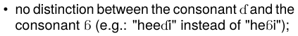
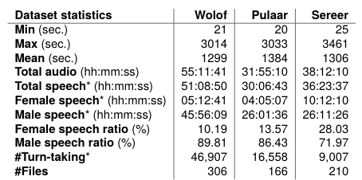
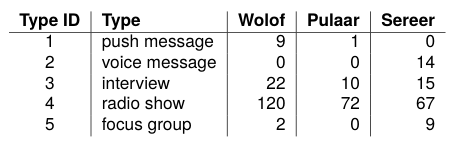

RAIL 2024Traduction automatique
Kallaama: Un ensemble de données de discours transcrits sur l'agriculture dans les trois langues les plus parlées au Sénégal
Traduction automatique, non relue par un humain. L'article original est la version de référence ; les phrases soulignées sont celles dont les contrôles automatiques n'étaient pas sûrs.
Proceedings of the Fifth Workshop on Resources for African Indigenous Languages @ LREC-COLING 2024.
Traduction par Ernst van Gassen (Arktos AI Lab), sous licence CC BY-NC 4.0 comme l'original. Réutilisation permise avec attribution, à usage non commercial uniquement. Les auteurs originaux n'ont pas relu ni approuvé cette traduction.
Texte brut réutilisable, avec sa licence : Français · LICENCE
Affiliations
Elodie Gauthier, Aminata Ndiaye, Abdoulaye Guissé
Orange Innovation, Jokalante SARL, École Polytechnique de Thiès
Lannion, France, Dakar, Sénégal, Thiès, Sénégal
Adresses e-mail retirées pour la protection de la vie privée. Elles figurent dans le PDF original.
Résumé
Ce travail s'inscrit dans le cadre du projet Kallaama, dont l'objectif est de produire et de diffuser des corpus de langues nationales pour le développement de technologies de la parole, dans le domaine de l'agriculture. À l'exception du wolof, qui bénéficie de quelques données langagières pour le traitement automatique des langues, les langues nationales du Sénégal sont largement ignorées par les fournisseurs de technologies du langage. Cependant, de telles technologies sont essentielles à la protection, à la promotion et à l'enseignement de ces langues. Kallaama se concentre sur les 3 principales langues parlées par les Sénégalais : le wolof, le pulaar et le sereer. Ces langues sont largement parlées par la population, avec environ 10 millions de locuteurs sénégalais natifs, sans compter ceux à l'extérieur du pays. Cependant, elles restent sous-dotées en termes de données lisibles par machine qui peuvent être utilisées pour le traitement automatique et les technologies linguistiques, et ce d'autant plus dans le secteur agricole. Nous publions un jeu de données de discours transcrits contenant 125 heures d'enregistrements, sur l'agriculture, dans chacune des langues mentionnées ci-dessus. Ces ressources sont spécifiquement conçues pour des fins de reconnaissance automatique de la parole, y compris les approches traditionnelles. Pour construire de telles technologies, nous fournissons des corpus textuels en wolof et en pulaar, ainsi qu'un lexique de prononciation contenant 49 132 entrées issues du jeu de données wolof.
Mots-clés
jeu de données de parole, langues sénégalaises, contexte peu doté, agriculture
1. Introduction
Alors que les technologies de l’information et de la communication sont essentielles pour que beaucoup prospèrent, 6 milliards de personnes n’ont toujours pas accès au haut débit, 4 milliards n’ont pas accès à Internet et 2 milliards n’ont pas accès à un téléphone mobile (Zelezny-Green et al., 2018). Les dernières estimations de l'Institut de la statistique de l'UNESCO (2023) indiquent environ 213 millions d'adultes (population de plus de 15 ans) qui ne savaient ni lire ni écrire en 2022, dans la région de l'Afrique subsaharienne, y compris près de 49 millions de jeunes (15-24 ans). Au Sénégal, l'ANSD (2021) rapporte un taux global d'analphabétisme de 48,2 %, atteignant 62,7 % dans les zones rurales.
Le taux d'alphabétisation est lié à la langue officielle d'un pays. Au Sénégal, la langue officielle est le français mais est rarement parlée par la population dans leur vie quotidienne. Les Sénégalais utilisent principalement leurs langues maternelles ou le wolof, comme langue véhiculaire, pour communiquer. La Banque mondiale (2021) rapporte que près de 65 % des Sénégalais qui n'utilisent pas Internet sont freinés par un manque d'alphabétisation numérique. Cela est en partie dû à la disponibilité limitée (voire inexistante) de contenus dans la langue qu'ils parlent. Actuellement, il y a un grave manque de contenu accessible pour ceux qui ne parlent pas les langues officielles en Afrique. Le développement de technologies et d'outils pour les langues les plus parlées permettrait à une plus grande partie de la population sénégalaise d'utiliser les smartphones et les applications, et d'accéder à des contenus encore indisponibles aujourd'hui.
Des travaux de recherche comme ceux de Medhi et al. (2011) et le succès de la communication vocale sur WhatsApp montrent que le développement de services vocaux conversationnels dans les langues locales est un moyen crédible et prometteur de rendre les services plus accessibles. Aker (2011) a également suggéré à cette époque que la combinaison d'une approche vocale avec des informations accessibles par le biais de réponses à des questions courantes des agriculteurs surmonterait les défis de l'alphabétisation dus aux modes de texting courants. Pour progresser dans ce domaine, des systèmes robustes de reconnaissance automatique de la parole doivent être conçus pour ces langues. Bien que les technologies de reconnaissance automatique de la parole (ASR) tendent à être matures dans les langues les plus couramment trouvées sur le Web, il existe encore très peu de solutions dédiées aux langues africaines.
Au Sénégal, les langues wolof, sereer, pulaar, joola, malinké et soninké sont reconnues comme langues nationales dans la Constitution, mais aucune de ces six langues ne bénéficie sérieusement des avancées technologiques majeures générées par l'IA. Des efforts ont été faits pour développer des ressources et technologies de la parole en wolof (voir section 4), mais aucune ressource n'est disponible pour la Reconnaissance Vocale Continue de Grand Vocabulaire (LVCSR) en pulaar ni en sereer. Pourtant, les langues wolof, pulaar et sereer sont parlées dans plus des deux tiers du pays sénégalais (Leclerc, 2023).
L’agriculture est la principale source de revenus de 2 milliards de personnes dans le monde (Zelezny-Green et al., 2018). Au Sénégal, 55 % de la population est impliquée dans la chaîne de valeur agricole, y compris l'agriculture familiale, l'élevage et la pêche.
Aujourd'hui, les technologies numériques aident les agriculteurs à développer leurs activités en leur permettant de se positionner sur les places de marché, en leur fournissant des informations sur les prix des matières premières et en leur donnant accès à des services financiers adaptés. Néanmoins, de telles solutions ne conviennent toujours pas aux agriculteurs, en particulier compte tenu de la prévalence de la communication écrite et de l'utilisation d'une langue qu'ils ne parlent pas, lors de l'interaction avec ces interfaces.
Avec l'intention de développer des solutions vocales, cet ensemble de données est destiné à combler le vide dans ce domaine.
Contribution de l'article. Cet article présente le jeu de données créé à partir de données de parole produites et annotées pendant le projet Kallaama, ainsi que des données textuelles collectées sur le web, dans le but de développer des solutions vocales dans les langues locales.
Plan de l'article. Après une introduction, nous présentons le projet dans la section 2. Les langues ciblées sont décrites à la section 3 et les ressources existantes dans ces langues sont énumérées à la section 4. La section 5 présente la méthodologie de collecte, tandis que la section 6 donne des détails sur l'ensemble de données. Ensuite, nous présentons quelques-unes des périodes difficiles que nous avons rencontrées pendant le projet dans la section 7 et nous mentionnons certaines des limites qui en ont résulté dans la section 8. Enfin, la section 9 conclut et donne quelques perspectives sur l'utilisation de Kallaama.
2. Le projet Kallaama
"Kallaama" signifie "parole" (du latin "verbum") en wolof.
2.1. Description
Comme mentionné dans la section 1, aucune ressource n'est disponible pour construire des systèmes LVCSR en Pulaar ni en Sereer. Seule une petite quantité existe en Wolof, mais aucune ne se concentre sur l'agriculture. Le projet Kallaama vise à combler cette lacune en produisant plusieurs dizaines d'heures de données audio localisées transcrites et annotées, pour entraîner des systèmes de reconnaissance automatique de la parole dans trois des principales langues nationales du Sénégal : le wolof, le sereer et le pulaar.
Le choix de ces 3 langues a été guidé par le nombre de locuteurs dans le pays. Il y a environ 5 millions de locuteurs natifs de wolof, 3,5 millions de locuteurs natifs de pulaar et 1,3 million de locuteurs natifs de sereer (Leclerc, 2023), qui représentent les trois quarts de la population totale. Ce sont les 3 langues les plus parlées au Sénégal, et elles sont également parlées à travers plusieurs frontières.
Les données produites sont des énoncés naturels et spontanés, avec un vocabulaire en contexte, conçues pour développer des modèles de reconnaissance automatique de la parole à grand vocabulaire, en particulier dans le domaine agricole. La reconnaissance automatique de la parole est la principale barrière technologique à surmonter pour développer des services vocaux destinés aux personnes peu ou pas alphabétisées. L'agriculture joue un rôle important dans les activités rurales au Sénégal. Elle est l'un des piliers de l'économie sénégalaise, estimée à contribuer à 15 % du PIB en 2022 comme mentionné dans l'Enquête Agricole Annuelle de la DAPSA (2023), et une grande proportion de la population en dépend directement.
2.2 Cas d'utilisation
Plusieurs entreprises et start-ups locales du secteur informatique se lancent de plus en plus dans la production de solutions d’IA qui prennent en compte les langues nationales. Il s'agit essentiellement de solutions de traduction automatique de texte ou de traduction de la parole, leur permettant d'élargir leur clientèle et d'offrir leurs services en français ou en anglais à des utilisateurs qui préfèrent le wolof, le pulaar, le sereer ou d'autres langues. Des initiatives sérieuses ont également été notées dans le développement de chatbots et de voicebots multilingues. Cependant, en raison de la rareté des données en langage naturel dans les langues locales, la plupart d'entre elles s'appuient sur des données synthétiques provenant de systèmes de traduction automatique. De plus, les modèles d'IA ne traitent encore que marginalement l'agriculture. Pourtant, les solutions numériques pour la vulgarisation agricole couvrent un éventail de besoins, notamment les services de diffusion d'informations, les outils de gestion de petite entreprise, l'entraînement et le renforcement des compétences, ainsi que les services financiers (Zelezny-Green et al., 2018).
Le jeu de données Kallaama contribue à la croissance du secteur agricole au Sénégal. Il peut renforcer la sécurité alimentaire en fournissant des informations vitales directement dans la langue maternelle des agriculteurs, grâce au développement de services vocaux tels que des conseils agricoles et financiers personnalisés aux petits exploitants. Par ailleurs, les transcriptions produites augmentent les jeux de données disponibles dans les langues sénégalaises et stimuleront les développements basés sur l'IA pour l'agriculture, comme la mise en place de bases de connaissances, d'assistants conversationnels, de systèmes de recommandation et de systèmes d'aide à la décision.
3. Se concentrer sur les langues ciblées
Les langues wolof, pulaar et sereer sont parlées par près de 80 % des locuteurs natifs au Sénégal. Cissé (2005) indique 43,7 % de locuteurs natifs du wolof, 23,2 % de locuteurs natifs du pulaar et 14,8 % de locuteurs natifs du sereer. Ces trois langues appartiennent au phylum Niger-Congo et font partie du groupe familial nord-atlantique. Elles sont sans tons, contrairement à la plupart des langues nigéro-congolaises. En ayant un statut national, les trois langues ont reçu un système d'orthographe officiel. Elle est basée sur les caractères latins.

Figure 1: Carte des principales langues parlées au Sénégal (Leclerc, 2023)
3.1. Wolof
Le wolof est de loin la langue la plus parlée au Sénégal. C'est la langue maternelle d'environ 5 millions de locuteurs. Le wolof parlé au Sénégal est identifié par le nom de code de la langue ISO 639-3 "wol". En étant parlé par près de 90 % de la population, le wolof est la langue nationale de communication, dépassant largement le français en termes d'usage (Cissé, 2005). Sur les réseaux sociaux, les commentaires sont principalement rédigés en wolof en réponse à des articles rédigés en français. L'Assemblée nationale propose un service de traduction car 20 % des députés ne parlent pas français. De plus, des chaînes de télévision et de radio privées ont développé des programmes en wolof (OIF, 2022).
3.2. Pulaar
Le pulaar fait partie des langues Fulfulde. Le fulfuldé est parlé dans environ 20 pays d'Afrique subsaharienne, par près de 30 millions de personnes, de l'Afrique de l'Ouest à l'Afrique centrale. "Pulaar" désigne la variante parlée au Sénégal. Le pulaar est la langue maternelle d'environ 3,5 millions de Sénégalais, ce qui en fait la deuxième langue la plus parlée du pays. Les locuteurs du pulaar à travers le pays ne se comprennent pas toujours. Des différences claires dans les accents et les lexiques doivent être notées. Il peut y avoir des emprunts et des influences mutuelles entre les accents. Le Pulaar parlé au nord, considéré comme la référence au Sénégal, utilisé dans les zones de Fouta Toro et de Ferlo, est différent de celui parlé au sud, dans les zones de Fouta Djallon et de Boundou, et du centre (particulièrement dans Saloum). Les activités économiques pratiquées par les Peuls dans ces régions sont à l'origine de ces différences, sans oublier la mobilité des populations et les échanges interculturels.
3.3. Sereer
La langue sereer est parlée par environ 1 million de locuteurs, ce qui en fait la troisième langue parlée au Sénégal. Plusieurs dialectes sont parlés au Sénégal (Renaudier, 2012), et la compréhension mutuelle entre les locuteurs de sereer est parfois difficile. La majorité des enregistrements proposés dans ce jeu de données sont en variante Sereer-Siin (code ISO 639-3 "srr"), qui est parlée dans une région située entre la Petite Côte (au sud de Dakar) et la Gambie, et qui est considérée comme le Sereer "standard". Néanmoins, selon l'endroit où l'enregistrement a été fait, il peut être dans une autre variante. L'alphabet officiel est basé sur la variante standard Sereer-Siin mais est très peu utilisé pour l'écriture. La langue est fondamentalement parlée.
4. Ressources linguistiques existantes pour le wolof, le pulaar et le sereer
Plus de matériel (dans n'importe quel domaine d'application, de la description linguistique à l'apprentissage des langues) peut être trouvé en wolof, en tant que langue véhiculaire. La situation est très différente avec le pulaar et le sereer : en tant que langues vernaculaires, elles sont principalement parlées et rarement écrites. La présence de Wolof en ligne est prépondérante contre Pulaar et Sereer, reflétant sa place dans la société sénégalaise.
Pour construire des solutions basées sur la voix, très peu de jeux de données ont été publiés jusqu'à présent en wolof. Les ensembles de données sur la parole de Pulaar et de Sereer sont presque inexistants, exception faite des initiatives présentées ci-dessous. Avant ce travail, le plus grand ensemble de données de paroles transcrites en wolof était celui collecté par Gauthier et al (2016). Il consiste en 18 heures de phrases lues validées.
Wolof est également proposé dans FLEURS, un jeu de données multilingue constitué de traductions de phrases en anglais qui ont été lues par des locuteurs natifs (Conneau et al., 2023).
Nelson (2022) a mené un projet de grande collecte de discours en wolof consistant en 519 heures d'enregistrements audio, dont 6,45 heures ont été transcrites jusqu'à présent. Parmi les 2 018 transcriptions en wolof, nous avons compté 608 traductions en pulaar, 571 en sereer mais seulement 156 enregistrements audio traduits dans les deux langues.
Enfin, le dernier travail significatif que nous avons trouvé impliquant les trois langues sénégalaises abordées dans cet article, fait partie d'un projet de collecte de données de mots isolés pour la détection de mots-clés, mené par la communauté sénégalaise Galsen AI (Djiba, 2021).
5. Méthodologie de collecte
5.1 Enregistrements audio et transcriptions
Enregistrements audio. Les enregistrements portent sur l'agriculture. Les personnes enregistrées sont des agriculteurs, des conseillers agricoles et des gestionnaires d’entreprises agroalimentaires. Toutes les données sont produites par Jokalante, une entreprise sénégalaise spécialisée dans la diffusion d'informations sur l'agriculture dans les langues locales. Types d'enregistrements comprennent des programmes de radio interactifs, des groupes de discussion, des messages vocaux, des messages push et des interviews. Par conséquent, la parole spontanée prévaut. La qualité de l'audio peut varier en fonction du type de programme. Par exemple, les groupes de discussion sont faits à l'extérieur et des bruits peuvent donc surgir de l'extérieur (voitures, vent, oiseaux, voix supplémentaires). Dans les programmes radio, de la musique et des jingles apparaissent parfois également. Une sélection de ces enregistrements a été transcrite, résultant en plus d'une centaine d'heures de parole spontanée dans les trois langues ciblées (voir la section 6.1).
Transcriptions. Pour produire la forme écrite des enregistrements audio, nous avons demandé aux transcripteurs de suivre les règles éditées par le Centre de Linguistique Appliquée de Dakar (CLAD), qui coordonne la standardisation orthographique des langues nationales au Sénégal. Malgré cette précaution, il était très difficile d'obtenir une forme standard dans l'écriture des langues concernées par le présent travail. Comme le mentionne Robert (2022) pour le wolof, les règles officielles sont rarement utilisées par la population (par exemple, les annonces sont souvent écrites avec des formes alternatives), même si une orthographe officielle est établie depuis 1971. La même situation se présente pour le Pulaar et le Sereer, et cela est principalement dû au fait que les langues nationales sont très peu enseignées dans le système éducatif. De plus, le travail de transcription impliquait des enregistrements de parole spontanée, rendant le travail d'autant plus complexe et chronophage. La tâche de transcription a été réalisée par 3 étudiants en linguistique, dans la langue qu'ils parlent nativement. Ils ont utilisé l'outil dédié Transcriber pour accomplir la tâche. Le travail a pris 9 mois pour être achevé. Ensuite, 3 experts qualifiés, spécialisés dans les langues des transcriptions, ont passé en revue une sous-partie des transcriptions produites par les étudiants. Dans un premier temps, nous avions pour objectif de vérifier la moitié des transcriptions produites, pour chaque langue. Mais c'était un objectif ambitieux étant donné la complexité et la pénibilité de la tâche requise. Néanmoins, près de 13 heures de transcription de parole ont été vérifiées en wolof, 11 heures en pulaar et 11 heures en sereer dans le délai imparti.
5.2. Collecte de textes
Les langues sénégalaises sont peu dotées en ressources. Très peu de données dans les langues ciblées ont été exhumées. Tout d'abord, aucun document sur l'agriculture n'a été trouvé. Depuis les observations de Renaudier (2012) qui a mentionné que la presse locale est majoritairement écrite en français, avec seulement quelques journaux disponibles en wolof, et qu’aucune presse n’était disponible à Sereer à l’époque, la situation reste inchangée.
La plupart des sources écrites trouvées étaient en wolof. Le corpus wolof que nous distribuons est composé des livres, des articles Wikipédia (dump à partir de l’été 2023), du premier livre du Nouveau Testament, de deux blogs historiques sur Hubert Fichte (un romancier allemand) et Cheikh Ahmadou Bamba (un théologien), des articles en ligne accessibles au public dans les journaux. Des données open source issues du challenge du Programme Algorithme et Solution (PAS), organisé par l’Institution des Algorithmes du Sénégal (IAS), ont également été incluses. Les données écrites en wolof peuvent également être récupérées à partir de projets de recherche open source (en particulier, le projet ALFFA et Masakhane). Nous choisissons de ne pas les ajouter à notre version car ils sont déjà propres et faciles à obtenir.
Nous avons trouvé une quantité très faible d'écrits en Pulaar. Nous avons étendu nos recherches de données pour inclure les variétés parlées dans les régions frontalières du Sénégal, et avons finalement trouvé plus de sites web écrits dans cette langue, en particulier en Mauritanie.
À propos du sereer, bien qu'il s'agisse de la troisième langue la plus parlée au Sénégal, la collecte de données écrites pose un défi significatif. Malgré des recherches approfondies, aucun contenu textuel n'a été trouvé sur les sites web consultés. Nous sommes même allés dans les deux principales bibliothèques universitaires de linguistique et de langues de Dakar (l'Université Cheikh Anta Diop (UCAD) et l'Institut Fondamental d'Afrique Noire (IFAN)), et n'avons trouvé que deux livres écrits en Sereer. Nous avons tout de même essayé d'appliquer certains outils de reconnaissance optique des caractères (OCR) pour le convertir en textes numériques, mais les caractères spéciaux existant dans Sereer n'ont pas été reconnus.
Nous avons délibérément exclu tous les réseaux sociaux afin d’éviter les biais qui pourraient être induits dans les modèles futurs. Par exemple, Dione (2016) a observé, dans son étude sur l'utilisation en ligne des langues wolof et sereer, que la plupart des utilisateurs d'Internet utilisent le français et le wolof alternativement dans un seul message. De plus, le wolof et le pulaar sont les deux seules langues nationales présentes sur les sites web consultés par l'auteur, tandis que le sereer est également son sujet d'étude. De plus, l'auteur indique que les utilisateurs d'Internet utilisent le wolof pour critiquer, pour afficher des choix politiques et des complicités, et pour insulter. Pour toutes ces raisons, nous avons préféré ne pas collecter de données textuelles auprès des forums.
Ces corpus textuels peuvent être utilisés pour entraîner des modèles de langage monolingues et multilingues sur le thème de l'agriculture. Les modèles de langage sont impliqués dans diverses tâches de NLP, telles que le rescoring ASR ou la modélisation de la compréhension/génération du langage naturel (NLU/NLG).
5.3. Lexique
Nous n’avons pas trouvé de dictionnaire avec la prononciation des mots pour le pulaar et le sereer, donc nous n’avons pas pu entraîner un modèle graphème-phonème (G2P) pour ces langues. Pour le wolof, nous avons utilisé le lexique du projet ALFFA pour entraîner un modèle G2P, afin de générer une transcription phonétique de l'ensemble de discours en wolof. Le modèle G2P a été entraîné en utilisant Phonetisaurus. Les symboles phonétiques générés sont dans l'alphabet X-SAMPA. Nous fournissons le modèle G2P et le lexique dans un dépôt GitHub. Il peut être utile d'entraîner des modèles ASR basés sur HMM.
6. Détails de l'ensemble de données
Le jeu de données est publié sous la licence CC-BY 4.0. Toutes les données textuelles (transcriptions, corpus de textes, lexique) sont disponibles sur GitHub. Les enregistrements audio sont hébergés sur les plateformes OpenSLR et Zenodo.
6.1. Enregistrements audio et transcriptions
Les fichiers audio ont été convertis en 16 kHz, 16 bits, canal mono, pour s'adapter au format standard utilisé dans ASR. Les transcriptions sont fournies sous le format original Transcriber (.trs), ainsi que dans le format stm NIST (.stm), car celui-ci est plus souvent utilisé par les boîtes à outils ASR.
Les détails concernant les jeux de données de discours sont donnés dans le tableau 1.

Tableau 1 : Aperçu du corpus de discours de Kallaama
Le grand nombre de changements de tour de parole que l'on peut observer dans le tableau 1 pour l'ensemble Wolof s'explique par une plus grande quantité d'entretiens et de groupes de discussion, impliquant plus de personnes dans la conversation.
La sous-représentation de la voix des femmes dans ce corpus est regrettable, mais elle reflète les entretiens menés et la présence des femmes dans l'agrobusiness.
Plus de détails sont donnés à l'annexe B, où nous décrivons également la sous-partie vérifiée de l'ensemble de données.
6.2. Collecte de textes
L'ensemble des textes collectés en wolof, avant l'application des méthodes de post-traitement, totalisait 3 244 642 mots. L'ensemble des textes recueillis à Pulaar, avant l'application des méthodes de post-traitement, totalisait 5 462 823 mots. Comme nous l'avons dit dans la sous-section 5.2, aucune donnée écrite n'a été trouvée à Sereer.
Au cours du post-traitement, les caractères non romains ont été supprimés des textes bruts. La ponctuation a été conservée pour donner aux utilisateurs une plus grande liberté, selon l'utilisation qui sera faite du corpus. Enfin, une nouvelle ligne a été ajoutée après chaque marque de ponctuation finale (le point, le point d'exclamation et le point d'interrogation) tandis que des espaces ont été ajoutés entre les autres types de marques typographiques (comme la virgule, les deux-points, le point-virgule, le tiret, la parenthèse, etc.
Après ces étapes de post-traitement, le corpus de texte en wolof contient 1 140 508 mots, tandis que le corpus de texte en pular contient 742 024 mots. Les détails sont donnés dans le tableau 2 et le tableau 3, pour le wolof et le pular respectivement. Cette réduction considérable du contenu reflète la présence significative d’autres langues dans les écrits, en particulier le français et l’arabe (nous n’avons pas appliqué d’algorithme d’identification de la langue, mais nous avons supprimé de nombreux caractères de l’alphabet arabe). Nous avons également trouvé un assez grand nombre de caractères cyrilliques dans les textes recueillis de Wikipédia.
Les données compilées amélioreront la compréhension de l'utilisation des langues et renforceront la capacité à développer des outils linguistiques plus robustes. Il servira également de référence d'entraînement pour les modèles de langage.

Tableau 2: Détails sur les textes web scrapés en wolof, après nettoyage

Tableau 3: Détails sur les textes web scrapés en Pulaar, après nettoyage
6.3. Lexique
Dans le but de construire des systèmes ASR, nous fournissons également un dictionnaire de prononciation pour le wolof. Il contient 49 132 entrées phonétisées issues de transcriptions de discours et de textes. Les entrées peuvent aussi être des emprunts, comme des mots français, car l'alternance codique est fréquente au Sénégal et apparaît donc dans le jeu de données de parole. Les entrées sont phonétiquement transcrites avec les caractères X-SAMPA.
7. Difficultés rencontrées
Les transcripteurs ont eu du mal à écrire certains des mots en raison de l'absence de certains caractères sur les claviers standards, tels que ɓ (b-hook), ƈ (c-hook), ɗ (d-hook), ƥ (p-hook), ƭ (t-hook) qui existent dans l'orthographe des langues africaines, en particulier en Pulaar et en Sereer. L'application de clavier visuel SenLangEdit, spécialement développée pour écrire les langues nationales du Sénégal, a encore facilité le processus de transcription.
7.1 Règles d'écriture
Il a été particulièrement difficile de trouver des experts qualifiés pour vérifier la qualité des transcriptions produites. Nous demandons à chaque expert de faire un rapport de ses évaluations. Pour Wolof, l'expert a déclaré que le travail était assez facile. Pour terminer le travail dans le temps imparti, il a réussi à vérifier près de 13 heures de transcriptions de discours et la conclusion était très encourageante. Il a noté une très bonne qualité de travail, avec très peu d'erreurs. En revanche, les deux experts qualifiés engagés pour examiner les transcriptions à Pulaar et Sereer ont déclaré un travail fastidieux. En dépit de cela, ils parviennent à vérifier environ 11 heures d'enregistrements audio chacun. Ils ont signalé de nombreuses erreurs et nous ont avertis que leur travail consisterait davantage à réécrire qu'à une simple vérification et correction. Nous détaillons les principales erreurs trouvées en annexe A.
En fait, cette évaluation de la qualité des transcriptions indique principalement un manque de compétences rédactionnelles plutôt qu'un manque d'attention à la qualité de la transcription. Il s'agit du résultat d'une tentative de transcrire une langue qui a traditionnellement été non écrite. Tant que ces langues ne seront pas enseignées pour être écrites, il n'y aura pas de bonnes productions écrites.
7.2. Dialectes parlés
Le fait que les enregistrements soient produits dans tout le Sénégal a rendu le travail de transcription beaucoup plus complexe, en raison des plusieurs variations dialectales du Pulaar et du Sereer qui sont parlées dans le pays (voir sections 3.2 et 3.3). Nous avons sélectionné les enregistrements audio au tout début du projet, avant l'embauche des transcripteurs. Mais les transcripteurs Pulaar ou Sereer ont parfois écouté des programmes enregistrés qu'ils ne comprenaient pas en raison d'une conversation dans un dialecte qu'ils ne parlent pas. Par conséquent, nous avons dû mener une deuxième campagne de collecte d'enregistrements qui a pris en compte les dialectes spécifiques parlés par les transcripteurs.
Ce processus met également en évidence la nécessité de prendre en compte les nuances sémantiques entre les variétés dialectales, en particulier lorsqu'on traite d'un sujet particulier (dans ce cas, l'agriculture, mais cela pourrait être la santé ou la finance) et illustre les défis inhérents à la préservation précise et exhaustive de la signification des mots dans ces langues.
8. Limites
Le travail de transcription est une tâche très difficile, et produire une transcription de la parole spontanée, lorsque des événements se chevauchent, parfois dans des environnements bruyants, est encore plus difficile. Ajoutez à cela l'utilisation de logiciels spécialisés qui ne sont pas familiers aux travailleurs, avec des claviers qui ne sont pas adaptés à l'écriture de la langue, et le début du travail devient encore plus fastidieux.
Malgré les soins de tous les travailleurs impliqués dans ce projet, cet ensemble de données contient des erreurs de transcription, et l'orthographe utilisée peut ne pas correspondre exactement aux normes attendues, comme indiqué dans la section 7. Un seul transcripteur a été sélectionné par langue pour effectuer le travail de transcription. Peut-être que certaines erreurs auraient pu être évitées si davantage de transcripteurs avaient fait le travail (à supposer que cela soit possible, car le nombre de personnes qualifiées est très limité). Mais, en raison des coûts de production, nous avons choisi de fournir à la communauté un ensemble plus important de données transcrites plutôt que d'augmenter le nombre de transcripteurs. De cette manière, nous avons pu augmenter le nombre de sujets couverts sur l'agriculture. Un ensemble de données de parole plus important est également plus adapté aux études à grande échelle, comme la recherche phonétique et phonologique sur les langues atlantiques, un domaine où les travaux font défaut.
9. Conclusion et opportunités
Dans cet article, nous présentons les travaux réalisés pour créer un jeu de données de discours transcrits en wolof, pulaar et sereer, les 3 langues les plus parlées au Sénégal. Ce jeu de données comprend 55h d'enregistrements audio en wolof, 32h en pulaar et 38h en sereer, tous accompagnés de leurs transcriptions correspondantes. Nous fournissons également des corpus de textes plus génériques en wolof et en pulaar, ainsi qu'un lexique phonétique wolof avec son modèle G2P. Ces ressources peuvent être utilisées pour la mise en place de systèmes ASR traditionnels.
Comme le soulignent de nombreuses études récentes (Joshi et al., 2020; van Esch et al., 2022; Ruder et al., 2022; Adebara et Abdul-Mageed, 2022), de nombreuses langues avec de grandes populations de locuteurs sont encore sous-représentées dans les études et applications de traitement automatique du langage naturel (NLP), renforçant ainsi des inégalités telles que l'accès aux connaissances. Nous espérons que ce travail stimulera l'intérêt pour le développement d'applications qui intègrent les langues vernaculaires du Sénégal, mais aussi qu'il servira de source d'inspiration et d'encouragement pour développer des ressources similaires afin de progresser vers l'inclusion des langues dans le monde de l'IA.
Les opportunités offertes par cet ensemble de données sont nombreuses. D'un point de vue scientifique, l'ensemble de données de discours publié peut être exploité, par exemple, pour étudier les phénomènes phonétiques se produisant dans un contexte spontané, pour étudier l'interaction verbale, ou pour étudier l'impact du discours spontané et bruyant sur les systèmes de reconnaissance. D'un point de vue technique, ce jeu de données peut être utilisé pour résoudre diverses tâches d'IA, notamment la modélisation de la parole (comme la transcription automatique de la parole ou la compréhension du langage parlé), la modélisation de réponses automatiques (comme les réponses QA) et la modélisation du langage (utilisée à partir de zéro ou utilisée pour affiner un modèle multilingue pré-entraîné). D'un point de vue technologique, il peut être utilisé pour développer des systèmes de reconnaissance automatique de la parole, génériques ou spécifiques au secteur agricole, ainsi que des agents conversationnels localisés pour répondre à des questions sur des sujets agricoles liés au contexte sénégalais et dans les langues nationales.
10. Remerciements
Le projet Kallaama a été rendu possible grâce au soutien financier du Fonds Lacuna, le premier effort de collaboration au monde visant à financer des données étiquetées pour un impact social. Le Fonds Lacuna favorise la création, l’expansion et la maintenance d’ensembles de données étiquetés dans trois domaines ayant des besoins clés : l’agriculture, la santé et les langues.
Les auteurs aimeraient également remercier et reconnaître les linguistes et les stagiaires en science des données impliqués dans le projet.
Notes
1 Comme l'a mentionné Creissels (2019), les langues non tonales sont principalement parlées dans les langues atlantiques de l'ouest du Sénégal et les langues bantoues de l'est du Kenya et de la Tanzanie (comme le swahili).
2 Une autre variante du wolof est parlée en Gambie, pour laquelle le code ISO est « wof ».
3 Pour chaque ensemble de données, le nombre d'enregistrements par type de programme est détaillé en annexe C.
4 http://clad.ucad.sn/
5 http://trans.sourceforge.net/
6 https://www.ias.sn/pas/
7 https://github.com/getalp/ALFFA_PUBLIC/
8 https://github.com/masakhane-io/masakhane-ner/
9 Sans distinction des variantes dialectales parlées au Sénégal.
10 https://github.com/AdolfVonKleist/Phonetisaurus/
11 https://github.com/gauthelo/kallaama-speech-dataset/
12 https://www.openslr.org/151/
13 https://zenodo.org/records/10892569/
14 https://esp.sn/senlangedit-un-clavier-virtuel-pour-la-promotion-des-langues-nationales/
15 Diouroup, Fatick, Kaffrine, Kaolack, Kebemer, Kelle, Koungheul, Louga, Matam, Ndoundour, Niodior, Nioro, Podor, Saint-Louis, Tambacound.
16 https://lacunafund.org/
11. Références bibliographiques
Ife Adebara and Muhammad Abdul-Mageed. 2022. Towards afrocentric NLP for African languages: Where we are and where we can go. In Proceedings of the 60th Annual Meeting of the Association for Computational Linguistics (Volume 1: Long Papers), pages 3814-3841, Dublin, Ireland. Association for Computational Linguistics.
Jenny C Aker. 2011. Dial "A" for agriculture: a review of information and communication technologies for agricultural extension in developing countries. Agricultural economics, 42(6):631-647.
ANSD. 2021. Enquête harmonisée sur les conditions de vie des ménages (EHCVM). Technical report, Agence Nationale de la Statistique et de la Démographie (ANSD).
Mamadou Cissé. 2005. Langues, état et société au Sénégal. SudLangues. Revue électronique internationale de Sciences du langage, 5(1):99-133.
Denis Creissels. 2019. Morphology in Niger-Congo languages. In Oxford Research Encyclopedia of Linguistics.
DAPSA. 2023. Rapport de l'Enquête Agricole Annuelle (EAA) 2022-2023. Technical report, Direction de l'Analyse, de la Prévision et des Statistiques Agricoles.
Amadou Dione. 2016. Contacts et valorisation du sérère et du wolof, langues nationales du Sénégal: Pratiques langagières et usages en ligne. Ph.D. thesis, Université Grenoble Alpes (ComUE).
Pratik Joshi, Sebastin Santy, Amar Budhiraja, Kalika Bali, and Monojit Choudhury. 2020. The state and fate of linguistic diversity and inclusion in the NLP world. In Proceedings of the 58th Annual Meeting of the Association for Computational Linguistics, pages 6282-6293.
Jacques Leclerc. 2023. Sénégal. L'aménagement linguistique dans le monde.
Indrani Medhi, Somani Patnaik, Emma Brunskill, SN Nagasena Gautama, William Thies, and Kentaro Toyama. 2011. Designing mobile interfaces for novice and low-literacy users. ACM Transactions on Computer-Human Interaction (TOCHI), 18(1):1-28.
OIF. 2022. La langue française dans le monde. Technical report, Organisation International de la Francophonie.
Marie Renaudier. 2012. Dérivation et valence en sereer. Variété de Mar Lodj (Sénégal). Ph.D. thesis, Université Lumière Lyon 2.
Stéphane Robert. 2022. Wolof: a grammatical sketch. In Friederike Lüpke, editor, The Oxford guide to the Atlantic languages of West Africa. Oxford University Press, Oxford.
Sebastian Ruder, Ivan Vulić, and Anders Søgaard. 2022. Square one bias in NLP: Towards a multidimensional exploration of the research manifold. In Findings of the Association for Computational Linguistics: ACL 2022, pages 2340-2354, Dublin, Ireland. Association for Computational Linguistics.
UNESCO Institute for Statistics. 2023. Education: Number of illiterates. Last consulted on 13 Feb 2024 07:49 UTC (GMT).
Daan van Esch, Tamar Lucassen, Sebastian Ruder, Isaac Caswell, and Clara Rivera. 2022. Writing system and speaker metadata for 2,800+ language varieties. In Proceedings of the Thirteenth Language Resources and Evaluation Conference, pages 5035-5046.
World Bank. 2021. World development report 2021: Data for better lives.
Ronda Zelezny-Green, Steven Vosloo, Gráinne Conole, et al. 2018. Digital inclusion for low-skilled and low-literate people: a landscape review.
12. Références des ressources linguistiques
Conneau, Alexis and Ma, Min and Khanuja, Simran and Zhang, Yu and Axelrod, Vera and Dalmia, Siddharth and Riesa, Jason and Rivera, Clara and Bapna, Ankur. 2023. Fleurs: Fewshot learning evaluation of universal representations of speech. 2022 IEEE Spoken Language Technology Workshop (SLT). PID https://huggingface.co/datasets/google/fleurs.
Djiba, Daouda Tandiang. 2021. Keyword Spotting with African Languages. Zenodo. PID https://doi.org/10.5281/zenodo.7561858.
Gauthier, Elodie and Besacier, Laurent and Voisin, Sylvie and Melese, Michael and Elingui, Uriel Pascal. 2016. Collecting Resources in Sub-Saharan African Languages for Automatic Speech Recognition: a Case Study of Wolof. European Language Resources Association (ELRA). PID https://hal.science/hal-01350037.
Nelson, Perry. 2022. Waxal Speech Data Resources. PID https://github.com/Waxal-Multilingual.
A. Détails sur les erreurs de transcription de la parole
A.1. Transcriptions en wolof
Les principales erreurs mentionnées sont:
- le non-respect de certains allongements de voyelles (p. ex., le mot « mbooleem » écrit à la place de « mboolem »);
- défaut de respecter la gémination des consonnes en interne et dans la position finale pour un certain nombre de mots (par exemple: "loppaalëb" au lieu de "lopaalëp");
- confusion entre les consonnes plosives en position finale de certains mots (/p/ versus /b/, /k/ versus /g/).
A.2. Transcriptions pulaar
Les principales erreurs signalées dans les transcriptions en Pulaar sont les suivantes :

- utilisation d'une consonne simple au lieu d'une consonne prénasale (par exemple: "jiiya" au lieu de "njiyaa");
- la concaténation d'un nom et de son article (ex.: "yimɓeɓe" au lieu de "yimɓe ɓee");
- confusion dans l'allongement des voyelles (par exemple : "deemowo" au lieu de "demoowo" ; "reemoɓeɓe" au lieu de "remooɓe ɓee").
A.3 Transcriptions de Sereer
Dans les transcriptions Sereer, des erreurs phonétiques, morphologiques et syntaxiques ont été trouvées. Notamment:
- consonnes pré-nasalisées ("/nd/" , "/mb/" , "/nj/" , "/ng/") utilisées à la place de consonnes glottalisées ou nasales ("ɓ" , "ɗ" , "ŋ");
- allongement vocalique non écrit (« refe » au lieu de « refee », « maga a mbag o njirña » au lieu de « maaga a mbaag o njirñaa » ;
- le nom et le pronom de classe sont détachés comme dans « xa qol axe » écrit « xa qola xe ».
B. Détails des ensembles de données sur la parole
Explication des rangées du tableau 4 et du tableau 5 :
- "Min (sec.)" est la durée minimale d'un fichier audio dans le jeu de données donné.
- "Max (sec.)" est la durée maximale d'un fichier audio dans le jeu de données donné.
- "Moyenne (sec.)" est la durée moyenne de tous les fichiers audio dans l'ensemble de données donné.
- "Total audio" est la durée totale de l'ensemble audio.
- "Total speech" est la durée totale de la parole de l'ensemble audio.
- "Female speech" correspond à la durée totale de parole des locutrices au sein de l'ensemble audio.
- "Male speech" correspond à la durée totale de parole des locuteurs masculins au sein de l'ensemble audio.
- "Female speech ratio" est le pourcentage de la durée de parole des locutrices au sein de l'ensemble audio.
- "Male speech ratio" est le pourcentage de la durée de parole des locuteurs masculins au sein de l'ensemble audio.
- "#Turn-taking" est le nombre de changements de locuteur dans l'ensemble audio complet.
- "#Files" est le nombre total d'enregistrements et de transcriptions dans l'ensemble de données vocales.
Les durées « Total speech », « Female speech », « Male speech » et « #Turn-taking » ont été calculées à partir des fichiers Transcriber (.trs). Cette information doit être traitée avec prudence, car elle dépend de l'exactitude des annotations faites par les transcripteurs. Toutes les autres informations du tableau sont calculées à partir de fichiers audio (.wav).
B.1. Ensemble complet
Le tableau 4 donne quelques statistiques sur l'ensemble des données vocales.

* extrait des annotations
Tableau 4 : Détails de l'ensemble de données de discours de Kallaama
B.2 Ensemble vérifié
Le tableau 5 donne quelques statistiques sur la sous-partie vérifiée de l'ensemble de données vocales.

* extrait des annotations
Tableau 5 : Détails sur la partie vérifiée de l'ensemble de données vocales de Kallaama
C. Types d'enregistrements
Les enregistrements proviennent de différents types de programmes et sont évalués sur une échelle de 1 à 5 en fonction de leur complexité potentielle pour le traitement de la parole. Cette notation est subjective et prend en compte des facteurs tels que la durée de l'enregistrement, le nombre de locuteurs parlants et les conditions d'enregistrement.
Une cote de 1 indique une complexité relativement faible, tandis qu'une cote de 5 indique une complexité relativement élevée. Cet ID est le premier numéro composant le nom des fichiers.
Le tableau 6 montre le nombre d'enregistrements par type de programme, pour chaque ensemble de langues.

Tableau 6: Nombre d'enregistrements par type de programme, pour chaque jeu de données linguistiques
English et Français
Kallaama: A Transcribed Speech Dataset about Agriculture in the Three Most Widely Spoken Languages in Senegal
Kallaama: Un ensemble de données de discours transcrits sur l'agriculture dans les trois langues les plus parlées au Sénégal
Affiliations
Elodie Gauthier, Aminata Ndiaye, Abdoulaye Guissé
Orange Innovation, Jokalante SARL, École Polytechnique de Thiès
Lannion, France, Dakar, Sénégal, Thiès, Sénégal
, ,
Affiliations
Elodie Gauthier, Aminata Ndiaye, Abdoulaye Guissé
Orange Innovation, Jokalante SARL, École Polytechnique de Thiès
Lannion, France, Dakar, Sénégal, Thiès, Sénégal
, ,
Abstract
Résumé
This work is part of the Kallaama project, whose objective is to produce and disseminate national languages corpora for speech technologies developments, in the field of agriculture. Except for Wolof, which benefits from some language data for natural language processing, national languages of Senegal are largely ignored by language technology providers. However, such technologies are keys to the protection, promotion and teaching of these languages. Kallaama focuses on the 3 main spoken languages by Senegalese people: Wolof, Pulaar and Sereer. These languages are widely spoken by the population, with around 10 million of native Senegalese speakers, not to mention those outside the country. However, they remain under-resourced in terms of machine-readable data that can be used for automatic processing and language technologies, all the more so in the agricultural sector. We release a transcribed speech dataset containing 125 hours of recordings, about agriculture, in each of the above-mentioned languages. These resources are specifically designed for Automatic Speech Recognition purpose, including traditional approaches. To build such technologies, we provide textual corpora in Wolof and Pulaar, and a pronunciation lexicon containing 49,132 entries from the Wolof dataset.
Ce travail s'inscrit dans le cadre du projet Kallaama, dont l'objectif est de produire et de diffuser des corpus de langues nationales pour le développement de technologies de la parole, dans le domaine de l'agriculture. À l'exception du wolof, qui bénéficie de quelques données langagières pour le traitement automatique des langues, les langues nationales du Sénégal sont largement ignorées par les fournisseurs de technologies du langage. Cependant, de telles technologies sont essentielles à la protection, à la promotion et à l'enseignement de ces langues. Kallaama se concentre sur les 3 principales langues parlées par les Sénégalais : le wolof, le pulaar et le sereer. Ces langues sont largement parlées par la population, avec environ 10 millions de locuteurs sénégalais natifs, sans compter ceux à l'extérieur du pays. Cependant, elles restent sous-dotées en termes de données lisibles par machine qui peuvent être utilisées pour le traitement automatique et les technologies linguistiques, et ce d'autant plus dans le secteur agricole. Nous publions un jeu de données de discours transcrits contenant 125 heures d'enregistrements, sur l'agriculture, dans chacune des langues mentionnées ci-dessus. Ces ressources sont spécifiquement conçues pour des fins de reconnaissance automatique de la parole, y compris les approches traditionnelles. Pour construire de telles technologies, nous fournissons des corpus textuels en wolof et en pulaar, ainsi qu'un lexique de prononciation contenant 49 132 entrées issues du jeu de données wolof.
Keywords
Mots-clés
speech dataset, Senegalese languages, low-resource setting, agriculture
jeu de données de parole, langues sénégalaises, contexte peu doté, agriculture
1. Introduction
1. Introduction
While information and communication technology is essential for many to thrive, 6 billion people still lack access to broadband, 4 billion lack access to the Internet, and 2 billion lack access to a mobile phone (Zelezny-Green et al., 2018). Latest estimations from UNESCO Institute for Statistics (2023) indicates around 213 million adults (population over 15 years old) who could not read or write, in 2022, across the sub-Saharan African region, including nearly 49 million young people (15-24 years old). In Senegal, ANSD (2021) reports an overall illiteracy rate of 48,2%, reaching 62,7% in rural area.
Alors que les technologies de l’information et de la communication sont essentielles pour que beaucoup prospèrent, 6 milliards de personnes n’ont toujours pas accès au haut débit, 4 milliards n’ont pas accès à Internet et 2 milliards n’ont pas accès à un téléphone mobile (Zelezny-Green et al., 2018). Les dernières estimations de l'Institut de la statistique de l'UNESCO (2023) indiquent environ 213 millions d'adultes (population de plus de 15 ans) qui ne savaient ni lire ni écrire en 2022, dans la région de l'Afrique subsaharienne, y compris près de 49 millions de jeunes (15-24 ans). Au Sénégal, l'ANSD (2021) rapporte un taux global d'analphabétisme de 48,2 %, atteignant 62,7 % dans les zones rurales.
Literacy rate relates to the official language of a country. In Senegal, the official language is French but is seldom spoken by the population in their daily lives. Senegalese people primarily use their native languages or Wolof, as a vehicular language, to communicate. World Bank (2021) reports that nearly 65% of Senegalese who do not use the Internet are hindered by a lack of digital literacy. This is partly due to the limited (if not none at all) availability of content in the language they speak. Currently, there is a severe lack of accessible content for those who do not speak the official languages in Africa. The development of technologies and tools for the most widely spoken languages would enable a larger proportion of the Senegalese people to use smartphones and applications, and to access content that is still unavailable today.
Le taux d'alphabétisation est lié à la langue officielle d'un pays. Au Sénégal, la langue officielle est le français mais est rarement parlée par la population dans leur vie quotidienne. Les Sénégalais utilisent principalement leurs langues maternelles ou le wolof, comme langue véhiculaire, pour communiquer. La Banque mondiale (2021) rapporte que près de 65 % des Sénégalais qui n'utilisent pas Internet sont freinés par un manque d'alphabétisation numérique. Cela est en partie dû à la disponibilité limitée (voire inexistante) de contenus dans la langue qu'ils parlent. Actuellement, il y a un grave manque de contenu accessible pour ceux qui ne parlent pas les langues officielles en Afrique. Le développement de technologies et d'outils pour les langues les plus parlées permettrait à une plus grande partie de la population sénégalaise d'utiliser les smartphones et les applications, et d'accéder à des contenus encore indisponibles aujourd'hui.
Research work as Medhi et al. (2011) and the success of WhatsApp voice communication show that the development of conversational voice services in local languages is a credible and promising way of making services more accessible. Aker (2011) also suggested in that time that combining a voice-based approach with information that can be accessed through answers to common farmer questions would overcome literacy challenges due to the common texting modes. To make progress in this area, robust speech recognition systems need to be designed for these languages. While automatic speech recognition (ASR) technologies tend to be mature in the languages most commonly found on the Web, there is still very few solutions dedicated to African languages.
Des travaux de recherche comme ceux de Medhi et al. (2011) et le succès de la communication vocale sur WhatsApp montrent que le développement de services vocaux conversationnels dans les langues locales est un moyen crédible et prometteur de rendre les services plus accessibles. Aker (2011) a également suggéré à cette époque que la combinaison d'une approche vocale avec des informations accessibles par le biais de réponses à des questions courantes des agriculteurs surmonterait les défis de l'alphabétisation dus aux modes de texting courants. Pour progresser dans ce domaine, des systèmes robustes de reconnaissance automatique de la parole doivent être conçus pour ces langues. Bien que les technologies de reconnaissance automatique de la parole (ASR) tendent à être matures dans les langues les plus couramment trouvées sur le Web, il existe encore très peu de solutions dédiées aux langues africaines.
In Senegal, Wolof, Sereer, Pulaar, Joola, Malinké and Soninké languages are recognised as national languages in the Constitution, but none of these six languages seriously benefit from the major technological advances generated by AI. Efforts have been made to develop speech resources and technologies in Wolof (see section 4) but no resources are available for Large Vocabulary Continuous Speech Recognition (LVCSR) in Pulaar nor Sereer. Yet, Wolof, Pulaar and Sereer languages are spoken in more than two-thirds of Senegal country (Leclerc, 2023).
Au Sénégal, les langues wolof, sereer, pulaar, joola, malinké et soninké sont reconnues comme langues nationales dans la Constitution, mais aucune de ces six langues ne bénéficie sérieusement des avancées technologiques majeures générées par l'IA. Des efforts ont été faits pour développer des ressources et technologies de la parole en wolof (voir section 4), mais aucune ressource n'est disponible pour la Reconnaissance Vocale Continue de Grand Vocabulaire (LVCSR) en pulaar ni en sereer. Pourtant, les langues wolof, pulaar et sereer sont parlées dans plus des deux tiers du pays sénégalais (Leclerc, 2023).
Agriculture is the primary source of income for 2 billion people around the world (Zelezny-Green et al., 2018). In Senegal, 55% of the population is involved in the agricultural value chain, including family farming, livestock breeding, and fishing.
L’agriculture est la principale source de revenus de 2 milliards de personnes dans le monde (Zelezny-Green et al., 2018). Au Sénégal, 55 % de la population est impliquée dans la chaîne de valeur agricole, y compris l'agriculture familiale, l'élevage et la pêche.
Today, digital technologies are assisting farmers in expanding their businesses by enabling them to position themselves on marketplaces, providing them with information on commodity prices, and granting them access to suitable financial services. Nonetheless, such solutions are still not appropriate for farmers, particularly given the prevalence of written communication and the use of a language they do not speak, when interacting with these interfaces.
Aujourd'hui, les technologies numériques aident les agriculteurs à développer leurs activités en leur permettant de se positionner sur les places de marché, en leur fournissant des informations sur les prix des matières premières et en leur donnant accès à des services financiers adaptés. Néanmoins, de telles solutions ne conviennent toujours pas aux agriculteurs, en particulier compte tenu de la prévalence de la communication écrite et de l'utilisation d'une langue qu'ils ne parlent pas, lors de l'interaction avec ces interfaces.
With the intention of speech solutions development, this dataset is intended to fill the gap in this area.
Avec l'intention de développer des solutions vocales, cet ensemble de données est destiné à combler le vide dans ce domaine.
Paper contribution. This paper presents the dataset created from speech data produced and annotated during the Kallaama project, as well as textual data gathered from the web, with the aim of developing voice-based solutions in local languages.
Contribution de l'article. Cet article présente le jeu de données créé à partir de données de parole produites et annotées pendant le projet Kallaama, ainsi que des données textuelles collectées sur le web, dans le but de développer des solutions vocales dans les langues locales.
Paper outline. After an introduction, we present the project in section 2. The targeted languages are described in section 3 and existing resources in these languages are listed in section 4. Section 5 presents the collection methodology, while section 6 gives details about the dataset. Then, we present some of the challenging times we faced during the project in section 7 and we mention some of the resulted limitations in section 8. Finally, section 9 concludes and gives some perspectives about the use of Kallaama.
Plan de l'article. Après une introduction, nous présentons le projet dans la section 2. Les langues ciblées sont décrites à la section 3 et les ressources existantes dans ces langues sont énumérées à la section 4. La section 5 présente la méthodologie de collecte, tandis que la section 6 donne des détails sur l'ensemble de données. Ensuite, nous présentons quelques-unes des périodes difficiles que nous avons rencontrées pendant le projet dans la section 7 et nous mentionnons certaines des limites qui en ont résulté dans la section 8. Enfin, la section 9 conclut et donne quelques perspectives sur l'utilisation de Kallaama.
2. The Kallaama project
2. Le projet Kallaama
"Kallaama" means "speech" (from Latin "verbum") in Wolof.
"Kallaama" signifie "parole" (du latin "verbum") en wolof.
2.1. Description
2.1. Description
As mentioned in section 1, no resources are available to build LVCSR systems in Pulaar nor Sereer. Only a small amount exist in Wolof, but none focus on agriculture. The Kallaama project aims to fill this gap by producing several dozen hours of transcribed and annotated localized audio data, to train speech recognition systems in three of the Senegal's main national languages: Wolof, Sereer and Pulaar.
Comme mentionné dans la section 1, aucune ressource n'est disponible pour construire des systèmes LVCSR en Pulaar ni en Sereer. Seule une petite quantité existe en Wolof, mais aucune ne se concentre sur l'agriculture. Le projet Kallaama vise à combler cette lacune en produisant plusieurs dizaines d'heures de données audio localisées transcrites et annotées, pour entraîner des systèmes de reconnaissance automatique de la parole dans trois des principales langues nationales du Sénégal : le wolof, le sereer et le pulaar.
The choice of these 3 languages was guided by the number of speakers in the country. There are around 5 million native speakers of Wolof, 3.5 million native speakers of Pulaar and 1.3 million native speakers of Sereer (Leclerc, 2023), which represent three quarter of the total population. These are the 3 most widely spoken languages in Senegal, and they are also spoken cross several borders.
Le choix de ces 3 langues a été guidé par le nombre de locuteurs dans le pays. Il y a environ 5 millions de locuteurs natifs de wolof, 3,5 millions de locuteurs natifs de pulaar et 1,3 million de locuteurs natifs de sereer (Leclerc, 2023), qui représentent les trois quarts de la population totale. Ce sont les 3 langues les plus parlées au Sénégal, et elles sont également parlées à travers plusieurs frontières.
The data produced are natural, spontaneous utterances, with vocabulary in context, designed to develop large vocabulary speech recognition models, particularly relating to the agricultural domain. Speech recognition is the main technological barrier to be overcome to develop voice-based services for people with little or no literacy. Agriculture plays an important role in rural activities in Senegal. It is one of the pillars of the Senegalese economy, estimated to contribute 15% of GDP in 2022 as mentioned in the Annual Agricultural Survey of DAPSA (2023), and a large proportion of the population remains directly dependent on it.
Les données produites sont des énoncés naturels et spontanés, avec un vocabulaire en contexte, conçues pour développer des modèles de reconnaissance automatique de la parole à grand vocabulaire, en particulier dans le domaine agricole. La reconnaissance automatique de la parole est la principale barrière technologique à surmonter pour développer des services vocaux destinés aux personnes peu ou pas alphabétisées. L'agriculture joue un rôle important dans les activités rurales au Sénégal. Elle est l'un des piliers de l'économie sénégalaise, estimée à contribuer à 15 % du PIB en 2022 comme mentionné dans l'Enquête Agricole Annuelle de la DAPSA (2023), et une grande proportion de la population en dépend directement.
2.2. Use case
2.2 Cas d'utilisation
Several and local companies and start-ups in the IT sector are increasingly embarking on the production of AI solutions that take national languages into account. These are essentially automatic text or speech translation solutions, allowing them to expand their customer base and offer their services in French or English to users who prefer Wolof, Pulaar, Sereer, or other languages. Serious initiatives also have been noted in the development of multilingual chatbots and voicebots. However, due to the scarcity of natural language data in local languages, most of them rely on synthetic data from machine translation systems. Moreover, AI models still only marginally address agriculture. Yet, digital solutions for agricultural extension work cover a range of needs, including information delivery services, small business management tools, training and skills enhancement, and financial services (Zelezny-Green et al., 2018).
Plusieurs entreprises et start-ups locales du secteur informatique se lancent de plus en plus dans la production de solutions d’IA qui prennent en compte les langues nationales. Il s'agit essentiellement de solutions de traduction automatique de texte ou de traduction de la parole, leur permettant d'élargir leur clientèle et d'offrir leurs services en français ou en anglais à des utilisateurs qui préfèrent le wolof, le pulaar, le sereer ou d'autres langues. Des initiatives sérieuses ont également été notées dans le développement de chatbots et de voicebots multilingues. Cependant, en raison de la rareté des données en langage naturel dans les langues locales, la plupart d'entre elles s'appuient sur des données synthétiques provenant de systèmes de traduction automatique. De plus, les modèles d'IA ne traitent encore que marginalement l'agriculture. Pourtant, les solutions numériques pour la vulgarisation agricole couvrent un éventail de besoins, notamment les services de diffusion d'informations, les outils de gestion de petite entreprise, l'entraînement et le renforcement des compétences, ainsi que les services financiers (Zelezny-Green et al., 2018).
The Kallaama dataset contributes to the growth of the agricultural sector in Senegal. It can strengthens food security by providing vital information directly in the farmers' native language, through the development of voice-based services such as personalised agricultural and financial advice to small-holder farmers. Besides, the produced transcriptions increase the available datasets in Senegalese languages, and will boost AI-based developments for agriculture, like setting up knowledge bases, conversational assistants, recommendation systems and decision support systems.
Le jeu de données Kallaama contribue à la croissance du secteur agricole au Sénégal. Il peut renforcer la sécurité alimentaire en fournissant des informations vitales directement dans la langue maternelle des agriculteurs, grâce au développement de services vocaux tels que des conseils agricoles et financiers personnalisés aux petits exploitants. Par ailleurs, les transcriptions produites augmentent les jeux de données disponibles dans les langues sénégalaises et stimuleront les développements basés sur l'IA pour l'agriculture, comme la mise en place de bases de connaissances, d'assistants conversationnels, de systèmes de recommandation et de systèmes d'aide à la décision.
3. Focus on the targeted languages
3. Se concentrer sur les langues ciblées
Wolof, Pulaar and Sereer languages are spoken by nearly 80% of native speakers in Senegal. Cissé (2005) indicates 43,7% of Wolof native speakers, 23,2% of Pulaar native speakers and 14,8% of Sereer native speakers. These three languages belong to the Niger-Congo phylum and are part of the North-Atlantic family group. They are toneless, unlike most Niger-Congo languages. By having a national status, the three languages received an official spelling system. It is based on the Latin characters.
Les langues wolof, pulaar et sereer sont parlées par près de 80 % des locuteurs natifs au Sénégal. Cissé (2005) indique 43,7 % de locuteurs natifs du wolof, 23,2 % de locuteurs natifs du pulaar et 14,8 % de locuteurs natifs du sereer. Ces trois langues appartiennent au phylum Niger-Congo et font partie du groupe familial nord-atlantique. Elles sont sans tons, contrairement à la plupart des langues nigéro-congolaises. En ayant un statut national, les trois langues ont reçu un système d'orthographe officiel. Elle est basée sur les caractères latins.
Figure 1: Map of main languages spoken in Senegal (Leclerc, 2023)
Figure 1: Carte des principales langues parlées au Sénégal (Leclerc, 2023)
3.1. Wolof
3.1. Wolof
Wolof is by far the most spoken language in Senegal. It is the native language of about 5 millon speakers. The Wolof spoken in Senegal is identified by the ISO 639-3 language code name "wol" . By being spoken by almost 90% of the population, Wolof is the national language of communication, widely surpassing French in terms of usage (Cissé, 2005). On social networks, comments are mainly written in Wolof in response to articles written in French. The National Assembly provides a translation service as 20% of MPs do not speak French. Additionally, private TV and radio channels have developed programmes in Wolof (OIF, 2022).
Le wolof est de loin la langue la plus parlée au Sénégal. C'est la langue maternelle d'environ 5 millions de locuteurs. Le wolof parlé au Sénégal est identifié par le nom de code de la langue ISO 639-3 "wol". En étant parlé par près de 90 % de la population, le wolof est la langue nationale de communication, dépassant largement le français en termes d'usage (Cissé, 2005). Sur les réseaux sociaux, les commentaires sont principalement rédigés en wolof en réponse à des articles rédigés en français. L'Assemblée nationale propose un service de traduction car 20 % des députés ne parlent pas français. De plus, des chaînes de télévision et de radio privées ont développé des programmes en wolof (OIF, 2022).
3.2. Pulaar
3.2. Pulaar
Pulaar is part of the Fulfulde languages. Fulfulde is spoken in about 20 sub-Saharan African countries, by nearly 30 million people, from West to Central Africa. "Pulaar" refers to the variant spoken in Senegal. Pulaar is the native language of about 3.5 millon of the Senegalese people, making it the second most widely spoken language in the country. Pulaar speakers across the country do not always understand each other. Clear differences in accents and lexicons should be noted. There may be borrowings and mutual influences between the accents. The Pulaar spoken in the north, considered as the reference in Senegal, used in the areas of Fouta Toro and Ferlo, is different from the one spoken in the south, in Fouta Djallon and Boundou areas, and from the centre (particularly in Saloum). The economic activities practiced by the Fulani in these regions are at the origin of these differences, without forgetting the mobility of populations and inter-cultural exchanges.
Le pulaar fait partie des langues Fulfulde. Le fulfuldé est parlé dans environ 20 pays d'Afrique subsaharienne, par près de 30 millions de personnes, de l'Afrique de l'Ouest à l'Afrique centrale. "Pulaar" désigne la variante parlée au Sénégal. Le pulaar est la langue maternelle d'environ 3,5 millions de Sénégalais, ce qui en fait la deuxième langue la plus parlée du pays. Les locuteurs du pulaar à travers le pays ne se comprennent pas toujours. Des différences claires dans les accents et les lexiques doivent être notées. Il peut y avoir des emprunts et des influences mutuelles entre les accents. Le Pulaar parlé au nord, considéré comme la référence au Sénégal, utilisé dans les zones de Fouta Toro et de Ferlo, est différent de celui parlé au sud, dans les zones de Fouta Djallon et de Boundou, et du centre (particulièrement dans Saloum). Les activités économiques pratiquées par les Peuls dans ces régions sont à l'origine de ces différences, sans oublier la mobilité des populations et les échanges interculturels.
3.3. Sereer
3.3. Sereer
Sereer language is spoken by around 1 million speakers, making it the third language spoken in Senegal. Several dialects are spoken in Senegal (Renaudier, 2012), and mutual understanding between Sereer speakers is sometimes difficult. The majority of the recordings proposed in this dataset are in Sereer-Siin (ISO 639-3 code "srr") variant, which is spoken in a region between the Petite Côte (south of Dakar) and the Gambia, and which is considered as "standard" Sereer. Nonetheless, depending on where the recording was made, it may be in another variant. The official script is based on the standard Sereer-Siin variant but is very little used for writing. The language is fundamentally spoken.
La langue sereer est parlée par environ 1 million de locuteurs, ce qui en fait la troisième langue parlée au Sénégal. Plusieurs dialectes sont parlés au Sénégal (Renaudier, 2012), et la compréhension mutuelle entre les locuteurs de sereer est parfois difficile. La majorité des enregistrements proposés dans ce jeu de données sont en variante Sereer-Siin (code ISO 639-3 "srr"), qui est parlée dans une région située entre la Petite Côte (au sud de Dakar) et la Gambie, et qui est considérée comme le Sereer "standard". Néanmoins, selon l'endroit où l'enregistrement a été fait, il peut être dans une autre variante. L'alphabet officiel est basé sur la variante standard Sereer-Siin mais est très peu utilisé pour l'écriture. La langue est fondamentalement parlée.
4. Existing language resources for Wolof, Pulaar and Sereer
4. Ressources linguistiques existantes pour le wolof, le pulaar et le sereer
More material (in any field of application, from linguistic description to language learning) can be found in Wolof, as a vehicular language. The situation is very different with Pulaar and Sereer: as vernacular languages, they are mainly spoken and rarely written. The presence of Wolof online is preponderant against Pulaar and Sereer, reflecting its place in the Senegalese society.
Plus de matériel (dans n'importe quel domaine d'application, de la description linguistique à l'apprentissage des langues) peut être trouvé en wolof, en tant que langue véhiculaire. La situation est très différente avec le pulaar et le sereer : en tant que langues vernaculaires, elles sont principalement parlées et rarement écrites. La présence de Wolof en ligne est prépondérante contre Pulaar et Sereer, reflétant sa place dans la société sénégalaise.
To build voice-based solutions, very few datasets were released so far in Wolof. Pulaar and Sereer speech datasets are nearly non-existent, exceptions made from the initiatives presented below. Before this work, the largest transcribed speech dataset in Wolof was the one collected by Gauthier et al. (2016). It consists in 18 hours of validated read sentences.
Pour construire des solutions basées sur la voix, très peu de jeux de données ont été publiés jusqu'à présent en wolof. Les ensembles de données sur la parole de Pulaar et de Sereer sont presque inexistants, exception faite des initiatives présentées ci-dessous. Avant ce travail, le plus grand ensemble de données de paroles transcrites en wolof était celui collecté par Gauthier et al (2016). Il consiste en 18 heures de phrases lues validées.
Wolof is also proposed in FLEURS, a multilingual dataset consisting in translation of English sentences that has been read by native speakers (Conneau et al., 2023).
Wolof est également proposé dans FLEURS, un jeu de données multilingue constitué de traductions de phrases en anglais qui ont été lues par des locuteurs natifs (Conneau et al., 2023).
Nelson (2022) conducted a project of large collection of Wolof speech consisting in 519 hours of audio recordings, for which 6.45 hours have been transcribed so far. Among the 2,018 Wolof transcriptions, we counted 608 translations in Pulaar, 571 in Sereer but only 156 audio recordings translated in both languages.
Nelson (2022) a mené un projet de grande collecte de discours en wolof consistant en 519 heures d'enregistrements audio, dont 6,45 heures ont été transcrites jusqu'à présent. Parmi les 2 018 transcriptions en wolof, nous avons compté 608 traductions en pulaar, 571 en sereer mais seulement 156 enregistrements audio traduits dans les deux langues.
Finally, the last significant work we found involving the three Senegalese languages addressed in this paper, is part of a data collection project of isolated words for keyword spotting, led by the Senegalese Galsen AI community (Djiba, 2021).
Enfin, le dernier travail significatif que nous avons trouvé impliquant les trois langues sénégalaises abordées dans cet article, fait partie d'un projet de collecte de données de mots isolés pour la détection de mots-clés, mené par la communauté sénégalaise Galsen AI (Djiba, 2021).
5. Collection methodology
5. Méthodologie de collecte
5.1. Audio recordings and transcriptions
5.1 Enregistrements audio et transcriptions
Audio recordings. The recordings are about agriculture. The recorded consist of farmers, agricultural advisers, and agri-food business managers. All the data is produced by Jokalante, a Senegalese company specialising in the dissemination of information about agriculture in local languages. Type of recordings comprise interactive radio programmes, focus groups, voice messages, push messages and interviews. Therefore, spontaneous speech is prevailing. Quality of audio may vary depending on the type of programme. For instance, focus group are made outdoor and so noises may arise from the outside (cars, wind, birds, additional voices). In radio programmes, music and jingles sometimes also appear. A selection from these recordings were transcribed, resulting in over a hundred hours of spontaneous speech in the three targeted languages (see Section 6.1).
Enregistrements audio. Les enregistrements portent sur l'agriculture. Les personnes enregistrées sont des agriculteurs, des conseillers agricoles et des gestionnaires d’entreprises agroalimentaires. Toutes les données sont produites par Jokalante, une entreprise sénégalaise spécialisée dans la diffusion d'informations sur l'agriculture dans les langues locales. Types d'enregistrements comprennent des programmes de radio interactifs, des groupes de discussion, des messages vocaux, des messages push et des interviews. Par conséquent, la parole spontanée prévaut. La qualité de l'audio peut varier en fonction du type de programme. Par exemple, les groupes de discussion sont faits à l'extérieur et des bruits peuvent donc surgir de l'extérieur (voitures, vent, oiseaux, voix supplémentaires). Dans les programmes radio, de la musique et des jingles apparaissent parfois également. Une sélection de ces enregistrements a été transcrite, résultant en plus d'une centaine d'heures de parole spontanée dans les trois langues ciblées (voir la section 6.1).
Transcriptions. To produce written form of the audio recordings, we asked the transcribers to follow the rules edited by the Centre of Applied Linguistics of Dakar (CLAD), which coordinates the orthographic standardization of the national languages in Senegal. Despite that caution, it was very difficult to obtain a standard form in the writing of languages concerned in the present work. As mentioned by Robert (2022) for Wolof, official rules are rarely used by the population (as example, advertisements are often written with alternative forms), even if an official orthography is established since 1971. The same situation appears for Pulaar and Sereer, and this is primarily due to the fact that the national languages are taught very little in the education system. In addition, the transcription work involved recordings of spontaneous speech, making the work all the more complex and time-consuming. Transcription task was performed by 3 students in Linguistics, in the language they natively speak. They used the dedicated Transcriber tool to achieve the task. The work took 9 months to complete. Then, 3 qualified experts, specialised in the languages of the transcripts, reviewed a subpart of the transcriptions produced by the students. At first, we were aiming to verify half of the transcriptions produced, for each language. But it was an ambitious goal given the complexity and arduousness of the task required. Nonetheless, nearly 13 hours of speech transcription were checked in Wolof, 11 hours in Pulaar and 11 hours in Sereer within the allotted time.
Transcriptions. Pour produire la forme écrite des enregistrements audio, nous avons demandé aux transcripteurs de suivre les règles éditées par le Centre de Linguistique Appliquée de Dakar (CLAD), qui coordonne la standardisation orthographique des langues nationales au Sénégal. Malgré cette précaution, il était très difficile d'obtenir une forme standard dans l'écriture des langues concernées par le présent travail. Comme le mentionne Robert (2022) pour le wolof, les règles officielles sont rarement utilisées par la population (par exemple, les annonces sont souvent écrites avec des formes alternatives), même si une orthographe officielle est établie depuis 1971. La même situation se présente pour le Pulaar et le Sereer, et cela est principalement dû au fait que les langues nationales sont très peu enseignées dans le système éducatif. De plus, le travail de transcription impliquait des enregistrements de parole spontanée, rendant le travail d'autant plus complexe et chronophage. La tâche de transcription a été réalisée par 3 étudiants en linguistique, dans la langue qu'ils parlent nativement. Ils ont utilisé l'outil dédié Transcriber pour accomplir la tâche. Le travail a pris 9 mois pour être achevé. Ensuite, 3 experts qualifiés, spécialisés dans les langues des transcriptions, ont passé en revue une sous-partie des transcriptions produites par les étudiants. Dans un premier temps, nous avions pour objectif de vérifier la moitié des transcriptions produites, pour chaque langue. Mais c'était un objectif ambitieux étant donné la complexité et la pénibilité de la tâche requise. Néanmoins, près de 13 heures de transcription de parole ont été vérifiées en wolof, 11 heures en pulaar et 11 heures en sereer dans le délai imparti.
5.2. Texts collection
5.2. Collecte de textes
Senegalese languages are low-resourced. Very few data in the targeted languages were unearth. First of all, no documents on agriculture were found. Since the observations from Renaudier (2012) who mentioned that the local press is predominantly written in French, with only a few newspapers available in Wolof, and that no press were available in Sereer at the time, the situation remains unchanged.
Les langues sénégalaises sont peu dotées en ressources. Très peu de données dans les langues ciblées ont été exhumées. Tout d'abord, aucun document sur l'agriculture n'a été trouvé. Depuis les observations de Renaudier (2012) qui a mentionné que la presse locale est majoritairement écrite en français, avec seulement quelques journaux disponibles en wolof, et qu’aucune presse n’était disponible à Sereer à l’époque, la situation reste inchangée.
Most of the written sources found were in Wolof. The Wolof corpus we distribute is composed of the books, Wikipedia articles (dump from summer 2023), the first book of the New Testament, two historic blogs about Hubert Fichte (a German novelist) and Cheikh Ahmadou Bamba (a theologian), publicly available online articles from newspapers. Open source data from the Programme Algorithme et Solution (PAS) challenge, organised by the Institution des Algorithmes du Sénégal (IAS), have also been included. Written data in Wolof can also be retrieve from open source research projects (in particular, the ALFFA project and Masakhane ). We choose not to add them to our release as they are already clean and easy to get.
La plupart des sources écrites trouvées étaient en wolof. Le corpus wolof que nous distribuons est composé des livres, des articles Wikipédia (dump à partir de l’été 2023), du premier livre du Nouveau Testament, de deux blogs historiques sur Hubert Fichte (un romancier allemand) et Cheikh Ahmadou Bamba (un théologien), des articles en ligne accessibles au public dans les journaux. Des données open source issues du challenge du Programme Algorithme et Solution (PAS), organisé par l’Institution des Algorithmes du Sénégal (IAS), ont également été incluses. Les données écrites en wolof peuvent également être récupérées à partir de projets de recherche open source (en particulier, le projet ALFFA et Masakhane). Nous choisissons de ne pas les ajouter à notre version car ils sont déjà propres et faciles à obtenir.
We found a very little amount of writings in Pulaar. We extended our data research to include varieties spoken in regions bordering Senegal, and finally found more websites written in this language, particularly in Mauritania.
Nous avons trouvé une quantité très faible d'écrits en Pulaar. Nous avons étendu nos recherches de données pour inclure les variétés parlées dans les régions frontalières du Sénégal, et avons finalement trouvé plus de sites web écrits dans cette langue, en particulier en Mauritanie.
About Sereer, although it is the third most widely spoken language in Senegal, gathering written data poses a significant challenge. Despite extensive research, no textual content was found on the consulted websites. We even went to the two main university of linguistic and language libraries in Dakar (Cheikh Anta Diop University (UCAD) and to the Institut Fondamental d'Afrique Noire (IFAN)), and only found two books written in Sereer. We still tried to apply some Optical Characters Recognition (OCR) tools to convert it into digital texts, but the special characters existing in Sereer were not recognised.
À propos du sereer, bien qu'il s'agisse de la troisième langue la plus parlée au Sénégal, la collecte de données écrites pose un défi significatif. Malgré des recherches approfondies, aucun contenu textuel n'a été trouvé sur les sites web consultés. Nous sommes même allés dans les deux principales bibliothèques universitaires de linguistique et de langues de Dakar (l'Université Cheikh Anta Diop (UCAD) et l'Institut Fondamental d'Afrique Noire (IFAN)), et n'avons trouvé que deux livres écrits en Sereer. Nous avons tout de même essayé d'appliquer certains outils de reconnaissance optique des caractères (OCR) pour le convertir en textes numériques, mais les caractères spéciaux existant dans Sereer n'ont pas été reconnus.
We have deliberately excluded all social networks in order to avoid biases that could be induced in future models. For example, Dione (2016) observed, in her study on the online usage of Wolof and Sereer languages, that most internet users use French and Wolof alternatively in a single message. Besides, Wolof and Pulaar are the only two national languages present on the websites consulted by the author, while Sereer is also his subject of study. Moreover, the author indicates that internet users use Wolof to criticise, to display political choices and connivance, and to insult. For all these reasons, we preferred not to collect textual data from the forums.
Nous avons délibérément exclu tous les réseaux sociaux afin d’éviter les biais qui pourraient être induits dans les modèles futurs. Par exemple, Dione (2016) a observé, dans son étude sur l'utilisation en ligne des langues wolof et sereer, que la plupart des utilisateurs d'Internet utilisent le français et le wolof alternativement dans un seul message. De plus, le wolof et le pulaar sont les deux seules langues nationales présentes sur les sites web consultés par l'auteur, tandis que le sereer est également son sujet d'étude. De plus, l'auteur indique que les utilisateurs d'Internet utilisent le wolof pour critiquer, pour afficher des choix politiques et des complicités, et pour insulter. Pour toutes ces raisons, nous avons préféré ne pas collecter de données textuelles auprès des forums.
These text corpora can be used to train monolingual and multilingual language models on the theme of agriculture. Language models are involved in various NLP tasks, such as ASR rescoring or natural language understanding/generation (NLU/NLG) modelling.
Ces corpus textuels peuvent être utilisés pour entraîner des modèles de langage monolingues et multilingues sur le thème de l'agriculture. Les modèles de langage sont impliqués dans diverses tâches de NLP, telles que le rescoring ASR ou la modélisation de la compréhension/génération du langage naturel (NLU/NLG).
5.3. Lexicon
5.3. Lexique
We found no dictionary with word pronunciation for Pulaar and Sereer, so we could not train a grapheme-to-phoneme (G2P) model for these languages. For Wolof, we used the lexicon from ALFFA project to train a G2P model, in order to generate phonetic transcription of the Wolof speech set. The G2P model was trained using Phonetisaurus. The generated phonetic symbols are in X-SAMPA alphabet. We provide the G2P model and the lexicon in a GitHub repository. It can be useful to train HMM-based ASR models.
Nous n’avons pas trouvé de dictionnaire avec la prononciation des mots pour le pulaar et le sereer, donc nous n’avons pas pu entraîner un modèle graphème-phonème (G2P) pour ces langues. Pour le wolof, nous avons utilisé le lexique du projet ALFFA pour entraîner un modèle G2P, afin de générer une transcription phonétique de l'ensemble de discours en wolof. Le modèle G2P a été entraîné en utilisant Phonetisaurus. Les symboles phonétiques générés sont dans l'alphabet X-SAMPA. Nous fournissons le modèle G2P et le lexique dans un dépôt GitHub. Il peut être utile d'entraîner des modèles ASR basés sur HMM.
6. Dataset details
6. Détails de l'ensemble de données
The dataset is released under the CC-BY 4.0 license. All textual data (transcriptions, text corpus, lexicon) are available on GitHub. Audio recordings are hosted on both OpenSLR and Zenodo platforms.
Le jeu de données est publié sous la licence CC-BY 4.0. Toutes les données textuelles (transcriptions, corpus de textes, lexique) sont disponibles sur GitHub. Les enregistrements audio sont hébergés sur les plateformes OpenSLR et Zenodo.
6.1. Audio recordings and transcriptions
6.1. Enregistrements audio et transcriptions
Audio files have been converted into 16 kHz, 16-bit, mono channel, to fit the standard format used in ASR. Transcriptions are provided under the original Transcriber format (.trs), as well as in stm NIST format (.stm) as this one is more often used by ASR toolkits.
Les fichiers audio ont été convertis en 16 kHz, 16 bits, canal mono, pour s'adapter au format standard utilisé dans ASR. Les transcriptions sont fournies sous le format original Transcriber (.trs), ainsi que dans le format stm NIST (.stm), car celui-ci est plus souvent utilisé par les boîtes à outils ASR.
Details about speech datasets are given in table 1.
Les détails concernant les jeux de données de discours sont donnés dans le tableau 1.
Table 1: Kallaama speech corpus overview
Tableau 1 : Aperçu du corpus de discours de Kallaama
The high number of turn-taking that can be observed in the table 1 for the Wolof set is explained by a larger amount of interviews and focus group, involving more people in the talk.
Le grand nombre de changements de tour de parole que l'on peut observer dans le tableau 1 pour l'ensemble Wolof s'explique par une plus grande quantité d'entretiens et de groupes de discussion, impliquant plus de personnes dans la conversation.
The underrepresentation of women's voices in this corpus is regrettable, but it reflects the interviews conducted and the women's presence in agribusiness.
La sous-représentation de la voix des femmes dans ce corpus est regrettable, mais elle reflète les entretiens menés et la présence des femmes dans l'agrobusiness.
More details are given in appendix B, where we also describe the checked subpart of the dataset.
Plus de détails sont donnés à l'annexe B, où nous décrivons également la sous-partie vérifiée de l'ensemble de données.
6.2. Texts collection
6.2. Collecte de textes
The set of texts collected in Wolof, before the application of post-processing methods, totalled 3,244,642 words. The set of texts collected in Pulaar, before the application of post-processing methods, totalled 5,462,823 words. As we said in subsection 5.2, no written data were found in Sereer.
L'ensemble des textes collectés en wolof, avant l'application des méthodes de post-traitement, totalisait 3 244 642 mots. L'ensemble des textes recueillis à Pulaar, avant l'application des méthodes de post-traitement, totalisait 5 462 823 mots. Comme nous l'avons dit dans la sous-section 5.2, aucune donnée écrite n'a été trouvée à Sereer.
During post-processing non roman characters were removed from raw texts. Punctuation has been preserved to give users greater freedom, depending on how the corpus will be used. Finally, a new line was added after each final punctuation mark (the dot, exclamation and question marks) while spaces was added between other kind of typography mark (such as comma, colon, semi-colon, dash, bracket, etc.).
Au cours du post-traitement, les caractères non romains ont été supprimés des textes bruts. La ponctuation a été conservée pour donner aux utilisateurs une plus grande liberté, selon l'utilisation qui sera faite du corpus. Enfin, une nouvelle ligne a été ajoutée après chaque marque de ponctuation finale (le point, le point d'exclamation et le point d'interrogation) tandis que des espaces ont été ajoutés entre les autres types de marques typographiques (comme la virgule, les deux-points, le point-virgule, le tiret, la parenthèse, etc.
After these post-processing steps, the Wolof text corpus contains 1,140,508 words, while the Pulaar text corpus contains 742,024 words. Detailed are given in table 2 and table 3, for Wolof and Pulaar respectively. This considerable reduction in content reflects the significant presence of other languages in the writings, particularly French and Arabic (we did not apply a language identification algorithm, but we did remove many characters in the Arabic alphabet). We also found a quite large number of Cyrillic characters in the collected texts from Wikipedia.
Après ces étapes de post-traitement, le corpus de texte en wolof contient 1 140 508 mots, tandis que le corpus de texte en pular contient 742 024 mots. Les détails sont donnés dans le tableau 2 et le tableau 3, pour le wolof et le pular respectivement. Cette réduction considérable du contenu reflète la présence significative d’autres langues dans les écrits, en particulier le français et l’arabe (nous n’avons pas appliqué d’algorithme d’identification de la langue, mais nous avons supprimé de nombreux caractères de l’alphabet arabe). Nous avons également trouvé un assez grand nombre de caractères cyrilliques dans les textes recueillis de Wikipédia.
The compiled data will enhance the understanding of the usage of the languages and strengthen the ability to develop more robust linguistic tools. It will also serve as a training baseline for language models.
Les données compilées amélioreront la compréhension de l'utilisation des langues et renforceront la capacité à développer des outils linguistiques plus robustes. Il servira également de référence d'entraînement pour les modèles de langage.
Table 2: Details about the web scrapped texts in Wolof, after cleaning
Tableau 2: Détails sur les textes web scrapés en wolof, après nettoyage
Table 3: Details about the web scrapped texts in Pulaar, after cleaning
Tableau 3: Détails sur les textes web scrapés en Pulaar, après nettoyage
6.3. Lexicon
6.3. Lexique
In the aim to build ASR systems, we also provide a pronunciation dictionary for Wolof. It contains 49,132 phonetised entries from speech transcriptions and texts. Entries can also be loanwords, such as French words, since code-switching is frequent in Senegal and therefore occurs in the speech dataset. Entries are phonetically transcribed with the X-SAMPA characters.
Dans le but de construire des systèmes ASR, nous fournissons également un dictionnaire de prononciation pour le wolof. Il contient 49 132 entrées phonétisées issues de transcriptions de discours et de textes. Les entrées peuvent aussi être des emprunts, comme des mots français, car l'alternance codique est fréquente au Sénégal et apparaît donc dans le jeu de données de parole. Les entrées sont phonétiquement transcrites avec les caractères X-SAMPA.
7. Challenges encountered
7. Difficultés rencontrées
Transcribers struggled to write some of the words because of the absence of certain characters on standard keyboards, such as ɓ (b-hook), ƈ (c-hook), ɗ (d-hook), ƥ (p-hook), ƭ (t-hook) which exist in the spelling of African languages, in particular in Pulaar and Sereer. The SenLangEdit visual keyboard application, especially developed to write the national languages of Senegal, still eased the transcription process.
Les transcripteurs ont eu du mal à écrire certains des mots en raison de l'absence de certains caractères sur les claviers standards, tels que ɓ (b-hook), ƈ (c-hook), ɗ (d-hook), ƥ (p-hook), ƭ (t-hook) qui existent dans l'orthographe des langues africaines, en particulier en Pulaar et en Sereer. L'application de clavier visuel SenLangEdit, spécialement développée pour écrire les langues nationales du Sénégal, a encore facilité le processus de transcription.
7.1. Writing rules
7.1 Règles d'écriture
It was particularly hard to find qualified experts for checking the quality of the produced transcriptions. We ask each expert to make a report of their reviews. For Wolof, the expert declared that the work was quite easy. To complete the work within the allocated time, he managed to check nearly 13 hours of speech transcriptions and the conclusion was very encouraging. He noted a very good quality of work, with very few mistakes. In contrast, the two qualified experts hired to review the transcriptions in Pulaar and Sereer declared a tedious work. In spite of this, they manage to verify around 11 hours of audio recordings each. They raised numerous mistakes and warned us that their work would be more about rewriting than simple checking and correction. We detail the main mistakes found in appendix A.
Il a été particulièrement difficile de trouver des experts qualifiés pour vérifier la qualité des transcriptions produites. Nous demandons à chaque expert de faire un rapport de ses évaluations. Pour Wolof, l'expert a déclaré que le travail était assez facile. Pour terminer le travail dans le temps imparti, il a réussi à vérifier près de 13 heures de transcriptions de discours et la conclusion était très encourageante. Il a noté une très bonne qualité de travail, avec très peu d'erreurs. En revanche, les deux experts qualifiés engagés pour examiner les transcriptions à Pulaar et Sereer ont déclaré un travail fastidieux. En dépit de cela, ils parviennent à vérifier environ 11 heures d'enregistrements audio chacun. Ils ont signalé de nombreuses erreurs et nous ont avertis que leur travail consisterait davantage à réécrire qu'à une simple vérification et correction. Nous détaillons les principales erreurs trouvées en annexe A.
In fact, this assessment of the transcriptions quality primarily indicates a lack of written skills rather than a lack of attention to transcription quality. This is the result of attempting to transcribe a language that has traditionally been unwritten. As long as these languages are not taught to be write, there will be no good written productions.
En fait, cette évaluation de la qualité des transcriptions indique principalement un manque de compétences rédactionnelles plutôt qu'un manque d'attention à la qualité de la transcription. Il s'agit du résultat d'une tentative de transcrire une langue qui a traditionnellement été non écrite. Tant que ces langues ne seront pas enseignées pour être écrites, il n'y aura pas de bonnes productions écrites.
7.2. Spoken dialects
7.2. Dialectes parlés
The fact that recordings are produced throughout the Senegal made the transcription work much more complex, because of the several dialectal variations of Pulaar and Sereer which are spoken in the country (see sections 3.2 and 3.3). We selected the audio recordings at the very beginning of the project, before the transcriber hiring. But Pulaar or Sereer transcribers sometimes listened to programmes recorded that they did not understand because of a conversation in a dialect that they do not speak. Consequently, we had to carry out a second recordings collection campaign that took into account the specific dialects spoken by the transcribers.
Le fait que les enregistrements soient produits dans tout le Sénégal a rendu le travail de transcription beaucoup plus complexe, en raison des plusieurs variations dialectales du Pulaar et du Sereer qui sont parlées dans le pays (voir sections 3.2 et 3.3). Nous avons sélectionné les enregistrements audio au tout début du projet, avant l'embauche des transcripteurs. Mais les transcripteurs Pulaar ou Sereer ont parfois écouté des programmes enregistrés qu'ils ne comprenaient pas en raison d'une conversation dans un dialecte qu'ils ne parlent pas. Par conséquent, nous avons dû mener une deuxième campagne de collecte d'enregistrements qui a pris en compte les dialectes spécifiques parlés par les transcripteurs.
This process also highlights the need to take account of the semantic subtleties between dialectal varieties, especially when dealing with a particular subject (in this case agriculture, but it could be health or finance) and illustrates the challenges inherent in accurately and exhaustively preserving the meaning of words in these languages.
Ce processus met également en évidence la nécessité de prendre en compte les nuances sémantiques entre les variétés dialectales, en particulier lorsqu'on traite d'un sujet particulier (dans ce cas, l'agriculture, mais cela pourrait être la santé ou la finance) et illustre les défis inhérents à la préservation précise et exhaustive de la signification des mots dans ces langues.
8. Limitations
8. Limites
Transcription work is a very challenging task, and to produce a transcript from spontaneous speech, when overlapping events occur, sometimes in noisy environments, is even more so. Add to this the use of specialised software that is unfamiliar to the workers, with keyboards that are not adapted to writing the language, and the start of the work becomes even more tedious.
Le travail de transcription est une tâche très difficile, et produire une transcription de la parole spontanée, lorsque des événements se chevauchent, parfois dans des environnements bruyants, est encore plus difficile. Ajoutez à cela l'utilisation de logiciels spécialisés qui ne sont pas familiers aux travailleurs, avec des claviers qui ne sont pas adaptés à l'écriture de la langue, et le début du travail devient encore plus fastidieux.
Despite the care of all the workers involved in this project, this dataset contains some transcription mistakes, and the spelling used may not correspond exactly to the expected standards, as pointed out in Section 7. Only one transcriber was selected per language to carry out the transcription work. Perhaps some mistakes could have been avoided if more transcribers were doing the job (supposing this is possible, since the number of skilled people is very limited). But, due to production costs, we have chosen to provide the community with a larger set of transcribed data rather than increasing the number of transcribers. In this way, we have been able to increase the number of subjects covered on agriculture. A larger speech dataset is also more suitable for large-scale studies, such as phonetic and phonological research on Atlantic languages, a field where works lack.
Malgré les soins de tous les travailleurs impliqués dans ce projet, cet ensemble de données contient des erreurs de transcription, et l'orthographe utilisée peut ne pas correspondre exactement aux normes attendues, comme indiqué dans la section 7. Un seul transcripteur a été sélectionné par langue pour effectuer le travail de transcription. Peut-être que certaines erreurs auraient pu être évitées si davantage de transcripteurs avaient fait le travail (à supposer que cela soit possible, car le nombre de personnes qualifiées est très limité). Mais, en raison des coûts de production, nous avons choisi de fournir à la communauté un ensemble plus important de données transcrites plutôt que d'augmenter le nombre de transcripteurs. De cette manière, nous avons pu augmenter le nombre de sujets couverts sur l'agriculture. Un ensemble de données de parole plus important est également plus adapté aux études à grande échelle, comme la recherche phonétique et phonologique sur les langues atlantiques, un domaine où les travaux font défaut.
9. Conclusion and Opportunities
9. Conclusion et opportunités
In this paper, we present the work carried out to create a transcribed speech dataset on Wolof, Pulaar and Sereer, the 3 most widely spoken languages in Senegal. This dataset comprises 55h of audio recordings in Wolof, 32h in Pulaar and 38h in Sereer, all along with their corresponding transcriptions. We also provide more generic text corpora in Wolof and Pulaar, as well as a Wolof phonetic lexicon along with its G2P model. These resources can be used for setting up traditional ASR systems.
Dans cet article, nous présentons les travaux réalisés pour créer un jeu de données de discours transcrits en wolof, pulaar et sereer, les 3 langues les plus parlées au Sénégal. Ce jeu de données comprend 55h d'enregistrements audio en wolof, 32h en pulaar et 38h en sereer, tous accompagnés de leurs transcriptions correspondantes. Nous fournissons également des corpus de textes plus génériques en wolof et en pulaar, ainsi qu'un lexique phonétique wolof avec son modèle G2P. Ces ressources peuvent être utilisées pour la mise en place de systèmes ASR traditionnels.
As pointed out by many recent studies (Joshi et al., 2020; van Esch et al., 2022; Ruder et al., 2022; Adebara and Abdul-Mageed, 2022), a lot of languages with large speaker populations still are under-represented in natural language processing (NLP) studies and applications, reinforcing inequalities such as knowledge access. We hope that this work will stimulate interest in the development of applications that incorporate the vernacular languages of Senegal, but also that it will be a source of inspiration and encouragement to develop the same kind of resources in order to progress towards the inclusion of languages in the world of AI.
Comme le soulignent de nombreuses études récentes (Joshi et al., 2020; van Esch et al., 2022; Ruder et al., 2022; Adebara et Abdul-Mageed, 2022), de nombreuses langues avec de grandes populations de locuteurs sont encore sous-représentées dans les études et applications de traitement automatique du langage naturel (NLP), renforçant ainsi des inégalités telles que l'accès aux connaissances. Nous espérons que ce travail stimulera l'intérêt pour le développement d'applications qui intègrent les langues vernaculaires du Sénégal, mais aussi qu'il servira de source d'inspiration et d'encouragement pour développer des ressources similaires afin de progresser vers l'inclusion des langues dans le monde de l'IA.
Opportunities offered by this dataset are numerous. From a scientific perspective, the speech dataset released can be exploited for instance, to study phonetic phenomena occurring in a spontaneous context, to study speech interaction, or to study the impact of spontaneous and noisy speech on recognition systems. From a technical perspective, this dataset can be used to solve various AI tasks, including speech modelling (such as speech-to-text or spoken language understanding), automatic response modelling (as QA answering), and language modelling (used from scratch or used to fine-tuned a pre-trained multilingual model). From a technological perspective, it can be utilised to develop speech recognition systems, generic or specific to the agricultural sector, as well as localised conversational agents for answering questions on agricultural topics related to the Senegal context and in national languages.
Les opportunités offertes par cet ensemble de données sont nombreuses. D'un point de vue scientifique, l'ensemble de données de discours publié peut être exploité, par exemple, pour étudier les phénomènes phonétiques se produisant dans un contexte spontané, pour étudier l'interaction verbale, ou pour étudier l'impact du discours spontané et bruyant sur les systèmes de reconnaissance. D'un point de vue technique, ce jeu de données peut être utilisé pour résoudre diverses tâches d'IA, notamment la modélisation de la parole (comme la transcription automatique de la parole ou la compréhension du langage parlé), la modélisation de réponses automatiques (comme les réponses QA) et la modélisation du langage (utilisée à partir de zéro ou utilisée pour affiner un modèle multilingue pré-entraîné). D'un point de vue technologique, il peut être utilisé pour développer des systèmes de reconnaissance automatique de la parole, génériques ou spécifiques au secteur agricole, ainsi que des agents conversationnels localisés pour répondre à des questions sur des sujets agricoles liés au contexte sénégalais et dans les langues nationales.
10. Acknowledgements
10. Remerciements
The Kallaama project was made possible thanks to the financial support from the Lacuna Fund, the world's first collaborative effort to fund labelled data for social impact. Lacuna Fund promotes creation, expansion, and maintenance of labelled datasets in three domain areas with key needs: agriculture, health, and languages.
Le projet Kallaama a été rendu possible grâce au soutien financier du Fonds Lacuna, le premier effort de collaboration au monde visant à financer des données étiquetées pour un impact social. Le Fonds Lacuna favorise la création, l’expansion et la maintenance d’ensembles de données étiquetés dans trois domaines ayant des besoins clés : l’agriculture, la santé et les langues.
The authors would also like to acknowledge and thank the linguists and data scientist interns involved in the project.
Les auteurs aimeraient également remercier et reconnaître les linguistes et les stagiaires en science des données impliqués dans le projet.
Notes
Notes
1 As mentioned by Creissels (2019), non tonal languages are primarily spoken in the Atlantic languages of western Senegal and the Bantu languages of eastern Kenya and Tanzania (like Swahili).
1 Comme l'a mentionné Creissels (2019), les langues non tonales sont principalement parlées dans les langues atlantiques de l'ouest du Sénégal et les langues bantoues de l'est du Kenya et de la Tanzanie (comme le swahili).
2 Another variant of Wolof is spoken in Gambia, for which the ISO code is "wof" .
2 Une autre variante du wolof est parlée en Gambie, pour laquelle le code ISO est « wof ».
3 For each dataset, the number of recordings per programme type is detailed in appendix C.
3 Pour chaque ensemble de données, le nombre d'enregistrements par type de programme est détaillé en annexe C.
4 http://clad.ucad.sn/
5 http://trans.sourceforge.net/
6 https://www.ias.sn/pas/
7 https://github.com/getalp/ALFFA_PUBLIC/
8 https://github.com/masakhane-io/masakhane-ner/
9 Without distinction of dialectal variants spoken in Senegal.
9 Sans distinction des variantes dialectales parlées au Sénégal.
10 https://github.com/AdolfVonKleist/Phonetisaurus/
11 https://github.com/gauthelo/kallaama-speech-dataset/
12 https://www.openslr.org/151/
13 https://zenodo.org/records/10892569/
14 https://esp.sn/senlangedit-un-clavier-virtuel-pour-la-promotion-des-langues-nationales/
15 Diouroup, Fatick, Kaffrine, Kaolack, Kebemer, Kelle, Koungheul, Louga, Matam, Ndoundour, Niodior, Nioro, Podor, Saint-Louis, Tambacound.
16 https://lacunafund.org/
11. Bibliographical References
11. Références bibliographiques
Ife Adebara and Muhammad Abdul-Mageed. 2022. Towards afrocentric NLP for African languages: Where we are and where we can go. In Proceedings of the 60th Annual Meeting of the Association for Computational Linguistics (Volume 1: Long Papers), pages 3814-3841, Dublin, Ireland. Association for Computational Linguistics.
Jenny C Aker. 2011. Dial "A" for agriculture: a review of information and communication technologies for agricultural extension in developing countries. Agricultural economics, 42(6):631-647.
ANSD. 2021. Enquête harmonisée sur les conditions de vie des ménages (EHCVM). Technical report, Agence Nationale de la Statistique et de la Démographie (ANSD).
Mamadou Cissé. 2005. Langues, état et société au Sénégal. SudLangues. Revue électronique internationale de Sciences du langage, 5(1):99-133.
Denis Creissels. 2019. Morphology in Niger-Congo languages. In Oxford Research Encyclopedia of Linguistics.
DAPSA. 2023. Rapport de l'Enquête Agricole Annuelle (EAA) 2022-2023. Technical report, Direction de l'Analyse, de la Prévision et des Statistiques Agricoles.
Amadou Dione. 2016. Contacts et valorisation du sérère et du wolof, langues nationales du Sénégal: Pratiques langagières et usages en ligne. Ph.D. thesis, Université Grenoble Alpes (ComUE).
Pratik Joshi, Sebastin Santy, Amar Budhiraja, Kalika Bali, and Monojit Choudhury. 2020. The state and fate of linguistic diversity and inclusion in the NLP world. In Proceedings of the 58th Annual Meeting of the Association for Computational Linguistics, pages 6282-6293.
Jacques Leclerc. 2023. Sénégal. L'aménagement linguistique dans le monde.
Indrani Medhi, Somani Patnaik, Emma Brunskill, SN Nagasena Gautama, William Thies, and Kentaro Toyama. 2011. Designing mobile interfaces for novice and low-literacy users. ACM Transactions on Computer-Human Interaction (TOCHI), 18(1):1-28.
OIF. 2022. La langue française dans le monde. Technical report, Organisation International de la Francophonie.
Marie Renaudier. 2012. Dérivation et valence en sereer. Variété de Mar Lodj (Sénégal). Ph.D. thesis, Université Lumière Lyon 2.
Stéphane Robert. 2022. Wolof: a grammatical sketch. In Friederike Lüpke, editor, The Oxford guide to the Atlantic languages of West Africa. Oxford University Press, Oxford.
Sebastian Ruder, Ivan Vulić, and Anders Søgaard. 2022. Square one bias in NLP: Towards a multidimensional exploration of the research manifold. In Findings of the Association for Computational Linguistics: ACL 2022, pages 2340-2354, Dublin, Ireland. Association for Computational Linguistics.
UNESCO Institute for Statistics. 2023. Education: Number of illiterates. Last consulted on 13 Feb 2024 07:49 UTC (GMT).
Daan van Esch, Tamar Lucassen, Sebastian Ruder, Isaac Caswell, and Clara Rivera. 2022. Writing system and speaker metadata for 2,800+ language varieties. In Proceedings of the Thirteenth Language Resources and Evaluation Conference, pages 5035-5046.
World Bank. 2021. World development report 2021: Data for better lives.
Ronda Zelezny-Green, Steven Vosloo, Gráinne Conole, et al. 2018. Digital inclusion for low-skilled and low-literate people: a landscape review.
12. Language Resource References
12. Références des ressources linguistiques
Conneau, Alexis and Ma, Min and Khanuja, Simran and Zhang, Yu and Axelrod, Vera and Dalmia, Siddharth and Riesa, Jason and Rivera, Clara and Bapna, Ankur. 2023. Fleurs: Fewshot learning evaluation of universal representations of speech. 2022 IEEE Spoken Language Technology Workshop (SLT). PID https://huggingface.co/datasets/google/fleurs.
Djiba, Daouda Tandiang. 2021. Keyword Spotting with African Languages. Zenodo. PID https://doi.org/10.5281/zenodo.7561858.
Gauthier, Elodie and Besacier, Laurent and Voisin, Sylvie and Melese, Michael and Elingui, Uriel Pascal. 2016. Collecting Resources in Sub-Saharan African Languages for Automatic Speech Recognition: a Case Study of Wolof. European Language Resources Association (ELRA). PID https://hal.science/hal-01350037.
Nelson, Perry. 2022. Waxal Speech Data Resources. PID https://github.com/Waxal-Multilingual.
A. Details on speech transcription mistakes
A. Détails sur les erreurs de transcription de la parole
A.1. Wolof transcriptions
A.1. Transcriptions en wolof
Main mistakes mentioned are:
Les principales erreurs mentionnées sont:
failure to respect certain vowel lengthenings (e.g.: word "mbooleem" written instead of "mboolem");
le non-respect de certains allongements de voyelles (p. ex., le mot « mbooleem » écrit à la place de « mboolem »);
failure to respect consonant gemination internally and in the final position for a number of words (e.g.: "loppaalëb" instead of "lopaalëp");
défaut de respecter la gémination des consonnes en interne et dans la position finale pour un certain nombre de mots (par exemple: "loppaalëb" au lieu de "lopaalëp");
confusion between plosives consonants in final position of certain words (/p/ versus /b/, /k/ versus /g/).
confusion entre les consonnes plosives en position finale de certains mots (/p/ versus /b/, /k/ versus /g/).
A.2. Pulaar transcriptions
A.2. Transcriptions pulaar
Main mistakes reported in the Pulaar transcriptions are the following:
Les principales erreurs signalées dans les transcriptions en Pulaar sont les suivantes :
use of a simple consonant instead of a prenasal consonant (e.g.: "jiiya" instead of "njiyaa");
utilisation d'une consonne simple au lieu d'une consonne prénasale (par exemple: "jiiya" au lieu de "njiyaa");
concatenation of a noun and its article (e.g.: "yimɓeɓe" instead of "yimɓe ɓee");
la concaténation d'un nom et de son article (ex.: "yimɓeɓe" au lieu de "yimɓe ɓee");
confusion in the vowel lengthening (e.g.: "deemowo" instead of "demoowo"; "reemoɓeɓe" instead of "remooɓe ɓee").
confusion dans l'allongement des voyelles (par exemple : "deemowo" au lieu de "demoowo" ; "reemoɓeɓe" au lieu de "remooɓe ɓee").
A.3. Sereer transcriptions
A.3 Transcriptions de Sereer
In the Sereer transcriptions, phonetical, morphological and syntactical mistakes were found. Notably:
Dans les transcriptions Sereer, des erreurs phonétiques, morphologiques et syntaxiques ont été trouvées. Notamment:
pre-nasalised consonants ("/nd/" , "/mb/" , "/nj/" , "/ng/") used instead of glotalised or nasal consonants ("ɓ" , "ɗ" , "ŋ");
consonnes pré-nasalisées ("/nd/" , "/mb/" , "/nj/" , "/ng/") utilisées à la place de consonnes glottalisées ou nasales ("ɓ" , "ɗ" , "ŋ");
vowel lengthening not written ("refe" instead of "refee" , "maga a mbag o njirña" instead of "maaga a mbaag o njirñaa";
allongement vocalique non écrit (« refe » au lieu de « refee », « maga a mbag o njirña » au lieu de « maaga a mbaag o njirñaa » ;
noun and class pronoun are detached as in "xa qol axe" written "xa qola xe" .
le nom et le pronom de classe sont détachés comme dans « xa qol axe » écrit « xa qola xe ».
B. Speech dataset details
B. Détails des ensembles de données sur la parole
Rows explanation of Table 4 and Table 5:
Explication des rangées du tableau 4 et du tableau 5 :
"Min (sec.)" is the minimum duration of an audio file in the given dataset.
"Min (sec.)" est la durée minimale d'un fichier audio dans le jeu de données donné.
"Max (sec.)" is the maximum duration of an audio file in the given dataset.
"Max (sec.)" est la durée maximale d'un fichier audio dans le jeu de données donné.
"Mean (sec.)" is the average duration of all the audio files in the given dataset.
"Moyenne (sec.)" est la durée moyenne de tous les fichiers audio dans l'ensemble de données donné.
"Total audio" is the total duration of the audio set.
"Total audio" est la durée totale de l'ensemble audio.
"Total speech" is the total speech duration of the audio set.
"Total speech" est la durée totale de la parole de l'ensemble audio.
"Female speech" is the total speech duration of female speakers within the audio set.
"Female speech" correspond à la durée totale de parole des locutrices au sein de l'ensemble audio.
"Male speech" is the total speech duration of male speakers within the audio set.
"Male speech" correspond à la durée totale de parole des locuteurs masculins au sein de l'ensemble audio.
"Female speech ratio" is the percentage of speech duration of female speakers within the audio set.
"Female speech ratio" est le pourcentage de la durée de parole des locutrices au sein de l'ensemble audio.
"Male speech ratio" is the percentage of speech duration of male speakers within the audio set.
"Male speech ratio" est le pourcentage de la durée de parole des locuteurs masculins au sein de l'ensemble audio.
"#Turn-taking" is the number of speaker turntakings in the whole audio set.
"#Turn-taking" est le nombre de changements de locuteur dans l'ensemble audio complet.
"#Files" is the total number of recordings and transcriptions in the speech dataset.
"#Files" est le nombre total d'enregistrements et de transcriptions dans l'ensemble de données vocales.
"Total speech" , "Female speech" , "Male speech" and "#Turn-taking" durations have been computed from the Transcriber (.trs) files. This information should be treated with caution, as it depends on the accuracy of the annotations made by the transcribers. All other information in the table is calculated from audio files (.wav).
Les durées « Total speech », « Female speech », « Male speech » et « #Turn-taking » ont été calculées à partir des fichiers Transcriber (.trs). Cette information doit être traitée avec prudence, car elle dépend de l'exactitude des annotations faites par les transcripteurs. Toutes les autres informations du tableau sont calculées à partir de fichiers audio (.wav).
B.1. Whole set
B.1. Ensemble complet
Table 4 gives some statistics on the whole speech dataset.
Le tableau 4 donne quelques statistiques sur l'ensemble des données vocales.
* extracted from annotations
* extrait des annotations
Table 4: Details about Kallaama speech dataset
Tableau 4 : Détails de l'ensemble de données de discours de Kallaama
B.2. Checked set
B.2 Ensemble vérifié
Table 5 gives some statistics on the checked subpart of the speech dataset.
Le tableau 5 donne quelques statistiques sur la sous-partie vérifiée de l'ensemble de données vocales.
* extracted from annotations
* extrait des annotations
Table 5: Details about checked part of Kallaama speech dataset
Tableau 5 : Détails sur la partie vérifiée de l'ensemble de données vocales de Kallaama
C. Recordings types
C. Types d'enregistrements
The recordings are from various types of programmes and are rated on a scale of 1 to 5 based on their potential complexity for speech processing. This rating is subjective and takes into account factors such as recording duration, number of talking speakers, and recording conditions.
Les enregistrements proviennent de différents types de programmes et sont évalués sur une échelle de 1 à 5 en fonction de leur complexité potentielle pour le traitement de la parole. Cette notation est subjective et prend en compte des facteurs tels que la durée de l'enregistrement, le nombre de locuteurs parlants et les conditions d'enregistrement.
A rating of 1 indicates relatively low complexity, while a rating of 5 indicates relatively high complexity. This ID is the first number composing the name of the files.
Une cote de 1 indique une complexité relativement faible, tandis qu'une cote de 5 indique une complexité relativement élevée. Cet ID est le premier numéro composant le nom des fichiers.
Table 6 shows the number of recordings per programme type, for each language set.
Le tableau 6 montre le nombre d'enregistrements par type de programme, pour chaque ensemble de langues.
Table 6: Number of recordings per programme type, for each language dataset
Tableau 6: Nombre d'enregistrements par type de programme, pour chaque jeu de données linguistiques
Comment citer
Citez l'article original pour son contenu et ses résultats. Citez la traduction lorsque vous reprenez la formulation traduite.
Citer l'article original
Gauthier, E., Ndiaye, A. et Guissé, A. (2024). Kallaama: A Transcribed Speech Dataset about Agriculture in the Three Most Widely Spoken Languages in Senegal. Dans Proceedings of the Fifth Workshop on Resources for African Indigenous Languages @ LREC-COLING 2024 (p. 10-19). https://aclanthology.org/2024.rail-1.2/
@inproceedings{gauthier-etal-2024-kallaama,
title = "Kallaama: A Transcribed Speech Dataset about Agriculture in the Three Most Widely Spoken Languages in {S}enegal",
author = "Gauthier, Elodie and
Ndiaye, Aminata and
Guiss{\'e}, Abdoulaye",
editor = "Mabuya, Rooweither and
Matfunjwa, Muzi and
Setaka, Mmasibidi and
van Zaanen, Menno",
booktitle = "Proceedings of the Fifth Workshop on Resources for {A}frican Indigenous Languages @ {LREC}-{COLING} 2024",
month = may,
year = "2024",
address = "Torino, Italia",
publisher = "ELRA and ICCL",
url = "https://aclanthology.org/2024.rail-1.2/",
pages = "10--19"
}TY - CONF AU - Gauthier, Elodie AU - Ndiaye, Aminata AU - Guissé, Abdoulaye TI - Kallaama: A Transcribed Speech Dataset about Agriculture in the Three Most Widely Spoken Languages in Senegal T2 - Proceedings of the Fifth Workshop on Resources for African Indigenous Languages @ LREC-COLING 2024 PY - 2024 SP - 10 EP - 19 UR - https://aclanthology.org/2024.rail-1.2/ LA - en ER -
Citer cette traduction
Gauthier, E., Ndiaye, A. et Guissé, A. (2026). Kallaama: Un ensemble de données de discours transcrits sur l'agriculture dans les trois langues les plus parlées au Sénégal (E. van Gassen, trad.). Traduction de "Kallaama: A Transcribed Speech Dataset about Agriculture in the Three Most Widely Spoken Languages in Senegal" (Proceedings of the Fifth Workshop on Resources for African Indigenous Languages @ LREC-COLING 2024, 2024). Talitha, Arktos AI Lab. https://talithapapers.com/fr/papers/2024.rail-1.2/
@misc{gauthier-etal-2024-kallaama-fr,
author = {Elodie Gauthier and Aminata Ndiaye and Abdoulaye Guissé},
translator = {van Gassen, Ernst},
title = {{Kallaama: Un ensemble de données de discours transcrits sur l'agriculture dans les trois langues les plus parlées au Sénégal}},
year = {2026},
publisher = {Arktos AI Lab},
language = {french},
url = {https://talithapapers.com/fr/papers/2024.rail-1.2/},
note = {Traduction de Kallaama: A Transcribed Speech Dataset about Agriculture in the Three Most Widely Spoken Languages in Senegal (Proceedings of the Fifth Workshop on Resources for African Indigenous Languages @ LREC-COLING 2024, 2024). Traduction automatique, non relue par un humain.}
}TY - GEN AU - Gauthier, Elodie AU - Ndiaye, Aminata AU - Guissé, Abdoulaye TA - van Gassen, Ernst TI - Kallaama: Un ensemble de données de discours transcrits sur l'agriculture dans les trois langues les plus parlées au Sénégal PY - 2026 PB - Arktos AI Lab UR - https://talithapapers.com/fr/papers/2024.rail-1.2/ LA - fr N1 - Traduction de Kallaama: A Transcribed Speech Dataset about Agriculture in the Three Most Widely Spoken Languages in Senegal (Proceedings of the Fifth Workshop on Resources for African Indigenous Languages @ LREC-COLING 2024, 2024). Traduction automatique, non relue par un humain. ER -